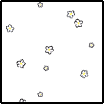

決戦フェイズ
GM：ST
BloodMoon : シーン表(8) → 打ち捨てられた廃墟。荒れ果てた景色に心も荒む。
GM：天を仰いで手足を曲げた焼死体。
グロキシニア：酸鼻を極める時計塔広場の中央に、その吸血鬼は立っている。

グロキシニア：「凄惨な有り様で」
グロキシニア：吸血鬼が振り返れば足元で瓦礫を踏み割る軽い音がした。
グロキシニア：「君たちがさ」
グロキシニア：「もっと早く消火活動に勤しんでたら、ちょっとは変わったんじゃないかと思うけど」
グロキシニア：「どうかな？」
グロキシニア：と、闇へと声を投げかける。
乾咲フラン：「そうは思わないな。」闇を切り裂きやってくるのは乾咲フラン。
忽亡ゆかり：「よく喋るな、あの変態」次いでゆかりの姿。

糸賀大亮：会話に応じるつもりはないが、嫌な気分にさせられるのは事実だ。
夜高ミツル：焼け跡に転がる、もしかしたら助けられたかもしれない人々の骸。
夜高ミツル：それらを見つめたあと、吸血鬼へと視線を移す。
夜高ミツル：交わす言葉など持たない。
真城朔：いつしか一番後ろで俯いている。
真城朔：視線が焼死体をちらりと向いて、それをすぐに逸らした。

グロキシニア：「延焼さえ防げたら、結構違ったんじゃないか？」
グロキシニア：両腕を広げる。
グロキシニア：その背後には瓦礫と化した煤けた石材が、
グロキシニア：嘗て高く聳えていたはずの時計塔の面影など僅かにも残さず、ただ無情に積み上がっている。
乾咲フラン：「焼いた張本人に言われてもな。」柔軟運動をしながら。
乾咲フラン：時計塔の面影が無い事は寧ろ幸いであった、そう思わされる程の惨状が否が応でも目に入る。
糸賀大亮：「……お前の、くだらない話に付き合うつもりはない」
糸賀大亮：吐き捨てるように言って、杭を構えた。
夜高ミツル：「……ああ、もううんざりだ」吸血鬼を真っ向から睨みつける。
夜高ミツル：「お前は、ここで殺す」
真城朔：「…………」
真城朔：「ミツ」
真城朔：真城は袖を軽くまくり、手首に爪を立てて傷を作る。
真城朔：どろりと溢れた血を手のひらで受け止める。それが淡く光って長刀へとかたちを変えた。
真城朔：それを、ミツルへと放り投げる。
夜高ミツル：投げ渡されたそれを受け取る。
真城朔：すぐに視線をグロキシニアに移して、杭を抜いた。
夜高ミツル：「真城」
真城朔：「…………」
夜高ミツル：視線は吸血鬼に向けたまま、声をかける。
夜高ミツル：「生きて帰るぞ」
真城朔：「……うん」
真城朔：返答の声はごく微かに、頷いたとてミツルの目には映らなかったろうが。
グロキシニア：「あーあ」
グロキシニア：吸血鬼は小さく嘆息してみせて、
グロキシニア：「どの狩人も、結局最後はこうなんだよねえ」
グロキシニア：「俺としてはもうちょっと長く楽しませてもらいたいくらいなんだけど」
グロキシニア：「すーぐこうして、向かってくる」
グロキシニア：「……なあ」
グロキシニア：表情を笑みの形に歪めて、グロキシニアが一歩、前に出る。
グロキシニア：「本当に勝つ気でいるのかい？」
グロキシニア：広げた両腕、その指先から、見せびらかすようにはらりと花弁を散らした。
グロキシニア：「今の俺の手には魔法がある」
グロキシニア：「世の理を歪め、地獄の沙汰さえ引っくり返すだけの、力がある！」
グロキシニア：「なあ――今晩は尻尾を巻いて逃げて、力を蓄えてまた再戦、とかどうだい？」
グロキシニア：「それだけの時間なら、君たちにくれてやれるけれど？」
夜高ミツル：「黙れよ」

夜高ミツル：「今日で終わりだ」
夜高ミツル：「……これ以上真城を傷つけさせない」
乾咲フラン：「残りは地獄で楽しんでもらおうか。」
忽亡ゆかり：「何言ってもキモいんだけど、まあ……」
忽亡ゆかり：「どうしても喋りたければ、首落とされながら喋っといてもらう感じで」
糸賀大亮：「お前ももう野放しにしておけるか」
糸賀大亮：「さっさとやるぞ」
真城朔：表情を強張らせながら杭を握る手に力を込め、
真城朔：無言のままに、吸血鬼を睨み返した。
グロキシニア：「……はあ」
グロキシニア：狩人たちの眼差しを受けてわざとらしくため息をつくと、
グロキシニア：「じゃあ、仕方ないか」
グロキシニア：「いいよ」
グロキシニア：「遊んでやろう」
グロキシニア：「この魔法と君たちで、心ゆくまで遊んで差し上げようじゃないか」
グロキシニア：「なあ――」
グロキシニア：ぶわ、と風が舞う。

グロキシニア：「君たちの望んで、欲しがった終末だぜ？」
GM：決戦フェイズを開始しましょう。
ラウンド1
GM：IST
BloodMoon : 先制判定指定特技表(1) → 《自信/社会5》
夜高ミツル：フランさん援護もらっていいですか？
夜高ミツル：焼肉を使います
乾咲フラン：援護すると決めポーズなくなりますね
乾咲フラン：どうしますか
夜高ミツル：えっまじか
乾咲フラン：神6 変装跳躍10
夜高ミツル：ほんとだ～じゃあ素でいくか
GM：素ミツル
糸賀大亮：お前には激情がある
乾咲フラン：ガンバ
糸賀大亮：2D6>=6 （判定：考えない）
BloodMoon : (2D6>=6) → 3[1,2] → 3 → 失敗
忽亡ゆかり：2D6>=8 （判定：見る）
BloodMoon : (2D6>=8) → 10[4,6] → 10 → 成功
夜高ミツル：2D6>=6 （判定：黙る） 焼くぞ！！
BloodMoon : (2D6>=6) → 8[2,6] → 8 → 成功
乾咲フラン：2D6>=7 （判定：伝える）
BloodMoon : (2D6>=7) → 8[2,6] → 8 → 成功
夜高ミツル：よしよし
夜高ミツル：夜高ミツルのテンションが2増加！（テンション：23->25）
夜高ミツル：グロキシニアに炎上で
GM：はい
乾咲フラン：ボボボ
GM：グロキシニアは炎上します。
糸賀大亮：燃やしてたら自分が燃える気分はどうだ！
GM：来いよ反社ァ！
夜高ミツル：行くぞ反社アタック
GM：PCは黙ってるのにPLには煽られる
乾咲フラン：反社ファイヤー 燃えてきた
夜高ミツル：舞い上がる花弁を越えて、グロキシニアに接近する。
グロキシニア：ミツルの進む道を塞ぐべく影が伸びる。
夜高ミツル：その影を避けながら、吸血鬼へと小瓶を投げつける。
グロキシニア：瓦礫の隙間から影が鋭く、その脚を縫い留めんと長く伸びる。
夜高ミツル：吸血鬼の足元でそれが割れて、炎が上がる。
グロキシニア：「おっ、と」
グロキシニア：噴き上がった炎に焼かれ、花弁が炭化していく。
夜高ミツル：伸ばされた影から逃れ、距離を取る。
グロキシニア：黒いコートの裾が緋色に灯って、それがはためくさまに視線を落として、
グロキシニア：「まあ」
グロキシニア：「人間の炎、って感じか」
グロキシニア：「涙ぐましいねえ？」
グロキシニア：あくまで余裕ぶって笑ってみせた。
グロキシニア：さて、先制ハンターの行動を。
夜高ミツル：脈断ちでフランさんに連携攻撃します
グロキシニア：いつものだな……
グロキシニア：了解です 他の二人はどうしますか
乾咲フラン：神の仮面しま～す
忽亡ゆかり：殺します
グロキシニア：怖い
グロキシニア：判定どうぞ＞神の仮面
乾咲フラン：2D6+3>=5 （判定：現れる）
BloodMoon : (2D6+3>=5) → 10[5,5]+3 → 13 → 成功
グロキシニア：美が現れたな……
グロキシニア：ではフランさんの余裕がレベル7+耐久値8の15に、攻撃のダメージに+7、追加行動を1回獲得ですね。
グロキシニア：乾咲フランのテンションが6増加！（テンション：12->18）
グロキシニア：乾咲フランの余裕が4増加！（余裕：11->15）
忽亡ゆかり：当たるか微妙だし当たっても部位飛ばせるか微妙な位置だな いっそ交差温存して次回もっかい妨害つきの交差ふるか？
グロキシニア：妨害やだよ～
糸賀大亮：地獄の沙汰持ってるかもしれんもんな～
夜高ミツル：神の命もあるような気がしてる
忽亡ゆかり：様子見パンチしますう？
糸賀大亮：交差温存はありだと思う 避けられる可能性は上がっちゃうが
忽亡ゆかり：最初に妨害当てて部位削れたらそれが一番なんじゃけどね ちょっとそれも怪しいしね
乾咲フラン：それかフォロワー殴るか
夜高ミツル：フォロワー殴るのありですね
糸賀大亮：ありだな
忽亡ゆかり：ふぉろわーかぁ
忽亡ゆかり：数字よく計算してないけどまあ死ぬじゃろな
糸賀大亮：恐らく3点しかない模様
夜高ミツル：白い花は暴力当てたら即死
グロキシニア：固定値+6だからな……
グロキシニア：いやそれどころじゃないなこの女
グロキシニア：12か？？？
グロキシニア：フォロワー相手に暴力で固定値12か？？？？？？
グロキシニア：暴力やめろ
忽亡ゆかり：固定値で即死
糸賀大亮：すごいな
夜高ミツル：権力者落とすのもありなんだよな
夜高ミツル：ミツルがフォロワーに殴られても部位が飛びかねないので
グロキシニア：耐久５ちゃん
夜高ミツル：どっちも固定値で落とせる
糸賀大亮：権力者と白い花を大亮とゆかりちゃんで掃除しちゃいますか
忽亡ゆかり：やりましょか
糸賀大亮：ゆかりちゃんお願いします！
忽亡ゆかり：はーい！白い花でいいかな？
グロキシニア：ゆかりちゃん打撃4研ぎ2聖騎士4暴力2だから何度見ても固定値12だな……
夜高ミツル：とりあえず権力者かなあ
糸賀大亮：いや、グロキシニアの方がレベルが高いから
忽亡ゆかり：おっけい
糸賀大亮：うむ
糸賀大亮：グロキシニアとグロキシニアがいて紛らわしい
グロキシニア：OK 判定を
忽亡ゆかり：2D6+2>=5 （判定：捕らえる）
BloodMoon : (2D6+2>=5) → 5[2,3]+2 → 7 → 成功
グロキシニア：ダメージは1D6+12ですね マジ？
忽亡ゆかり：1d6+12
BloodMoon : (1D6+12) → 3[3]+12 → 15
グロキシニア：はい。
グロキシニア：では『グロキシニア』が粉々に砕け散りました。
グロキシニア：かわいそうに……
グロキシニア：罪のない花が……
乾咲フラン：グロキのところにあったのがわるい
グロキシニア：まあそもそも真城から取り上げて俺のものにした魔法のことなんですが……
忽亡ゆかり：前に立ち、真っすぐグロキシニアへと走る。
グロキシニア：黒いコートから火の粉を散らしながら、金色の瞳で狩人たちを睥睨する。
忽亡ゆかり：グロキシニアのわずか手前、地面を蹴り上げる。砕けた砂利が金色の瞳へと吸い込まれていく。
グロキシニア：「おや――」
グロキシニア：影を伸ばして、その砂利を振り払う。
グロキシニア：「君、喧嘩慣れしてるよねえ！」
忽亡ゆかり：「あらよっとぉ！」
忽亡ゆかり：伸びる影に合わせ、ラリアット。影もろとも、グロキシニアの顔へと向けて。
グロキシニア：グロキシニアが軽口を叩いている間に、影へとラリアットが叩き込まれた。
グロキシニア：ぎし、と何かが軋むような感触がゆかりの腕に届く。
グロキシニア：影の世界に呑み込まれてナイフを突き立てた時の気持ちの悪いあの感覚とは違う。
忽亡ゆかり：「邪魔！！」
忽亡ゆかり：上腕二頭筋がシャツ越しに膨らむ。そのまま構わず、全力で振りぬいた。
グロキシニア：振り抜いた腕が、影を砕く。
グロキシニア：そのままグロキシニアの顔面へとゆかりの腕が叩き込まれる、
グロキシニア：寸前に吸血鬼は大きく身を引いた。
グロキシニア：影からはらはらと花弁を散らしながら、ゆかりを見る。
忽亡ゆかり：「ッシャオラ！」
グロキシニア：「いやあ――本当に」
忽亡ゆかり：「品がなくて悪いね！この快感がたまらねえんだ！」
グロキシニア：「面白いなあ、君は！」
グロキシニア：「構わないよ」
グロキシニア：「俺だって、そう作法にうるさい方じゃない」
グロキシニア：「いつだって、楽しいのが一番だもんなあ？」
グロキシニア：狩人の手番が終了でいいですね。
グロキシニア：ではモンスターの行動。
グロキシニア：先にフォロワー：白い花を動かしておこう。
グロキシニア：2D6>=9 ミツルに基本攻撃です。
BloodMoon : (2D6>=9) → 4[1,3] → 4 → 失敗
乾咲フラン：フニャ
忽亡ゆかり：かわえ
グロキシニア：忘れてください。白い花なのが悪いんだと思う。
夜高ミツル：フニャだねえ
糸賀大亮：フニャ
グロキシニア：まあそもそも９以上だからいいのだが……
グロキシニア：ではグロキシニアは行動前に医療キットを使用。
乾咲フラン：カス！
グロキシニア：腕でコートにまとわりついた火を振り払い、
グロキシニア：そのまま金色の瞳はフランを向いた。
グロキシニア：グロキシニアの行動。
グロキシニア：フランに魅了。拍車を組み合わせて。
グロキシニア：2D6>=5 （判定：見る）
BloodMoon : (2D6>=5) → 6[2,4] → 6 → 成功
乾咲フラン：オギャアアアア
糸賀大亮：魅了ォ？
夜高ミツル：ひーー
糸賀大亮：えーん
夜高ミツル：えっ変装で殴りかかってくるってこと？マジ？
乾咲フラン：人が死ぬが？
糸賀大亮：神の仮面より魅了の追加のが先なんだっけ
乾咲フラン：全部失った挙げ句仲間を殺す羽目に！？
グロキシニア：次の行動ということにします。
グロキシニア：アビリティ強化による変更が入っています。
グロキシニア：＞ＧＭが目標を操ることが出来るタイミングを、獲得する追加行動タイミングではなく、目標の次の行動タイミングに変更する
夜高ミツル：オエーーー
糸賀大亮：ヒエーッ
忽亡ゆかり：あんまりだァ～
糸賀大亮：かなりきつい
グロキシニア：変装跳躍攻撃、強いんだよ！
乾咲フラン：そうでもしないと削れねえんだもん！
夜高ミツル：最低！
グロキシニア：こっちはテンション14飛ばしてんだ！！
夜高ミツル：いやいや待ってくれ……
糸賀大亮：連携攻撃ってどうなるんだ？
グロキシニア：そのまま乗るに決まっていますが？
糸賀大亮：ひっでえ
忽亡ゆかり：笑えるほどに刺さるな
夜高ミツル：嘘でしょ
グロキシニア：この一発芸のために一枠とテンション8を支払った。
糸賀大亮：ミツルくんまでついでに操られているが！？
乾咲フラン：ホゲ～
夜高ミツル：これ確実に俺のとこくるんじゃん！！！
夜高ミツル：死ィ～！
グロキシニア：モンスターは変装を握っていない。
夜高ミツル：そうですけどもお
糸賀大亮：モンスターが変装握ってるより最悪なんだよな
糸賀大亮：（こっちの変装が潰されるから）
夜高ミツル：ほんとだよ
夜高ミツル：なんか流血もこっちに来るし
糸賀大亮：めちゃくちゃだよ
乾咲フラン：変装跳躍してなお苦戦してきたこの人生を…！！１
糸賀大亮：フランさんの人生…………
グロキシニア：次のフランの行動を、グロキシニアが指定し、ダイスを振ります。
乾咲フラン：オワギャアアアア
夜高ミツル：グロキシニアのテンションが14増加！（テンション：26->40）
夜高ミツル：グロキシニアは激情を獲得！（激情：2->4）
グロキシニア：その視線が。
乾咲フラン：「……！？」
グロキシニア：吸血鬼の魔眼と目が合った瞬間、
グロキシニア：フランの目の前の世界が眩む。
グロキシニア：影と闇に支配された世界がなお暗くなり、何もかも判別がつかなくなる。
グロキシニア：失ったもの。
グロキシニア：奪われたもの。
グロキシニア：奪ったもの。
グロキシニア：求めるもの。
グロキシニア：影に満ちた世界の中で、フランの深層意識が剥き出しになり、
グロキシニア：ただ奥底の欲に基づいてしか、世界を見られなくなる。
乾咲フラン：「……こ、れは……」
真城朔：「…………っ」
真城朔：「乾咲さん……？」
乾咲フラン：フランの髪が妖しい輝きを増す……
真城朔：様子のおかしくなったフランを案じて真城が振り返る。
真城朔：グロキシニアとフランとを交互に見て、
真城朔：「乾咲さん、何か、あいつに――」
真城朔：フランへと駆け寄ってくる。
乾咲フラン：「…………」その目は真城を見ているようで、見ていない。
真城朔：「っ、乾咲さん！」
真城朔：繰り返しその名を呼ぶも、闇と影に意識を呑まれたフランには届かず。

乾咲フラン：きらきらとした輝きが好きで、きらきらとしたものになりたかった、きらきらしたい。美しくなりたい、美しいものに囲まれたい。美の収集。
乾咲フラン：目の前に欲しいものがある！フランは両腕を伸ばし、掴む。
真城朔：「っ！？」
真城朔：無防備な腕を掴まれる。
真城朔：先程は応えてくれなかったそれが今度はフランの方から伸ばされて、驚愕に目を瞬いた。
夜高ミツル：「っ、真城！」
GM：ああ～
糸賀大亮：コレクターーーー
糸賀大亮：回帰している
GM：決戦で背徳破壊ができていて嬉しいな
糸賀大亮：操られているフランさん美しい クソッ やめろ あんまりだよ
乾咲フラン：エ～ン変装跳躍
GM：一旦後攻ハンターの行動をやりましょう。
GM：大亮さんどうぞ。
糸賀大亮：はーい。えっこの流れで白い花に行くのか？
GM：まあ白い花ってRP的にはグロキ殴りだから不自然ではないでしょ
糸賀大亮：まあフランに何しやがった！ みたいな感じで行きゃいいか
乾咲フラン：まあうまいこと闇がアレでこっちのが聞こえなかったとかでいいんじゃないかな
GM：いけるいける～
乾咲フラン：フ～ラフラフラ
糸賀大亮：悪の笑い声が聞こえる気がする～
糸賀大亮：では白い花に考えなしの暴力を振るいます
GM：判定を
糸賀大亮：2D6+1>=5 （判定：考えない）
BloodMoon : (2D6+1>=5) → 8[3,5]+1 → 9 → 成功
GM：即死だよ 儚い白い花ちゃんが
糸賀大亮：1d6+5
BloodMoon : (1D6+5) → 2[2]+5 → 7
グロキシニア：散りました。
糸賀大亮：儚いね
乾咲フラン：パラパラ
グロキシニア：おいでよ白い花を考えなしの暴力で殴る森
糸賀大亮：はーい。フランへグロキシニアが目を向けて何かしたのを見て、舌打ちして吸血鬼の方へ。
糸賀大亮：注意をこちらへ向けて、視線を切ろうとする。
グロキシニア：「うわっ」
糸賀大亮：杭を長く持って、下から顎へ向けて振るう。
グロキシニア：それをぎりぎりで躱そうとして、杭の先端がグロキシニアの顎を僅かにかすめる。
グロキシニア：「鋭いね」
グロキシニア：「でも――ちょっとばかし、遅かったかなあ？」
糸賀大亮：「何を……！」
糸賀大亮：フランの方が気になる。踏み込もうとした脚がわずか止まって。
グロキシニア：その背後で。
グロキシニア：先攻ハンターの追加行動です。
糸賀大亮：クソが！
糸賀大亮：素直な感情が出てしまった。
グロキシニア：魅了の効果により、フランの次の行動をグロキシニアが指定、ダイスを振ります。
乾咲フラン：カス！！
グロキシニア：フランは跳躍攻撃+変装を使用。対象は夜高ミツル。
グロキシニア：2D6+2>=5 （判定：跳ぶ）
BloodMoon : (2D6+2>=5) → 5[2,3]+2 → 7 → 成功
乾咲フラン：気合でファンブルせんかい
夜高ミツル：オエオエ
夜高ミツル：ファンブルしてたら激情も使われてたのでは？
グロキシニア：激情とアイテムの使用は不可能という裁定にしています。
糸賀大亮：何でこれ恐慌になるんだよ！って今更思っちゃった
夜高ミツル：全てが無理すぎる
グロキシニア：ダメージは跳躍攻撃が3D6、変装で2D6、打撃力が3、神の仮面が7、連携攻撃が1ですね。
乾咲フラン：ハハハ
グロキシニア：5D6+11
BloodMoon : (5D6+11) → 20[2,2,4,6,6]+11 → 31
忽亡ゆかり：31
乾咲フラン：カス…
グロキシニア：余裕の8を引いて23を5で割って、4部位か。
グロキシニア：乾咲フランのテンションが10増加！（テンション：18->28）
グロキシニア：乾咲フランは激情を獲得！（激情：0->1）
グロキシニア：夜高ミツルのテンションが2増加！（テンション：25->27）
グロキシニア：夜高ミツルの余裕が8減少！（余裕：8->0）
グロキシニア：夜高ミツルへ4個の部位ダメージ！（部位ダメージ：1->5）
グロキシニア：BRT
BloodMoon : 身体部位決定表(4) → 《利き脚》
グロキシニア：BRT
BloodMoon : 身体部位決定表(7) → 《攻撃したキャラクターの任意》
グロキシニア：RT
グロキシニア：BRT
BloodMoon : 身体部位決定表(9) → 《呼吸器》
グロキシニア：BRT
BloodMoon : 身体部位決定表(8) → 《口》
乾咲フラン：ハァ～
乾咲フラン：最悪音頭だよ～
夜高ミツル：気が狂いそう
グロキシニア：見事に外したな。どこにしよっかな……
グロキシニア：利き腕にしましょうか。
グロキシニア：利き脚、利き腕、呼吸器、口。
グロキシニア：再起判定を。これで5部位目ですね？
夜高ミツル：はい……
夜高ミツル：1d6
BloodMoon : (1D6) → 2
グロキシニア：OK
夜高ミツル：夜高ミツルは激情を使用！（激情：2->1）
夜高ミツル：嘘だろ……
糸賀大亮：キッツい
乾咲フラン：オゲーーー
夜高ミツル：めちゃめちゃだよ
真城朔：腕を掴まれた真城が、大きく目を見開いてフランを見る。
乾咲フラン：色々できなかったこと、できなくなった事がある。
乾咲フラン：しかし今この手は欲しい物を掴んでいる。
真城朔：「乾咲さ、……ッ」
真城朔：掴まれた腕を振り解こうと力を込めかけて、びくりと身が引きつる。
乾咲フラン：指先に力が籠もる。その腕ごと無理やりに纏めながら真城を抱きしめる。
真城朔：「！？」
忽亡ゆかり：「いっ！？」
糸賀大亮：「フラン！」
夜高ミツル：「な……！！」
真城朔：「ま、って」
夜高ミツル：真城とフランの元へと駆け寄る。
真城朔：「いぬ、いさき、さ」
乾咲フラン：フランは仲間に見られて居ることを我関せずとも言わんばかりに、両腕でぎしりと真城を抱きしめて笑っている。
真城朔：静止の声は掠れて力なく。
真城朔：ぎし、と折られた肋骨が軋んで表情を歪ませた。
夜高ミツル：真城を抱きしめるフランを引き剥がそうと。
真城朔：「だめ」
真城朔：「だめ、だ」
真城朔：「今は……っ」
夜高ミツル：「乾咲さん！おい！！」
乾咲フラン：真城の背中に長い、赤いネイルがじわりと刺さる。
真城朔：学ランの背を引き裂いて、長く美しい指先がその皮膚に突き立つ。
乾咲フラン：黒木の声がする。
乾咲フラン：フランの髪が封じ込めてきた憎しみに呼応するようにじわりと色を変えた。
乾咲フラン：（違う、このミツルは 何が違う 何も違わない）
夜高ミツル：「乾咲さん！！」
夜高ミツル：真城を抱くフランの腕を掴む。
真城朔：痛みにぶるりと震えて竦んだ身体が、フランの胸に収まった。
真城朔：それが声を聞いて、
真城朔：ミツルの声を聞いて、真城の頭が上がる。
真城朔：今度はそちらに救いを求めるように、瞳がミツルを向いた。
夜高ミツル：「真城……！」
乾咲フラン：ぎゃしりと歯をむき出しにした笑顔を夜高に向ける――それを確認できたのは夜高にとって一瞬のことだったかもしれない。
夜高ミツル：「…………っ！？」
夜高ミツル：あまりにも異様なフランの雰囲気に呑まれ、動きが止まる。
乾咲フラン：真城の背を走りながら赤い爪がひらめき、まずは不愉快な音を出す器官を潰した。
真城朔：「――――」
乾咲フラン：街の炎のように赤い手を翻し、掌底を喉に当てる。
夜高ミツル：その一瞬後、首に強い衝撃。
乾咲フラン：モンスターに使う技術をそのまま振るう。なぜなら黒木はモンスターになったから。
乾咲フラン：殺さなくてはならない。
真城朔：「あ」
真城朔：「――ぁ、っ」
真城朔：「ミツ！！」
真城朔：悲鳴めいた叫びが、殴打の音に掻き消される。
夜高ミツル：「────っ」
夜高ミツル：躱すことも、受け身を取ることすらもできず、ミツルの身体が吹き飛ぶ。
夜高ミツル：身体が地面を跳ね、転がる。
夜高ミツル：「──い、」
夜高ミツル：咳き込む。
乾咲フラン：真城が父親を呼んでいる。かわいそうに。こんな悲しい事は早く終わらせなければならない。地を駆けて空を飛び、数多のモンスターに振るった致死の蹴りをミツルの利き足に抉りこむ。
夜高ミツル：「っ！！」
夜高ミツル：悲鳴は音にならなかった。
真城朔：フランの腕を振り解いてミツルに駆け寄ろうとして、針に足を貫かれて姿勢を崩す。
乾咲フラン：衝撃で時計塔の地面がまた新たに破壊される。
夜高ミツル：フランのつま先が抉りこまれた脚が、ぎしりと歪む。
真城朔：思い出の地が踏み荒らされることよりも、目の前のミツルが害されていることに表情を歪ませる。
乾咲フラン：モンスターを動かさないために、攻撃に使うであろう部位を狙う。利き腕を取り……関節を見定めて極める。
夜高ミツル：そしてあまりにも呆気なく、骨が音を立てて折れる。
乾咲フラン：息を吸って吐く。あっさりと関節ごと腕を破壊した。
夜高ミツル：「っ、あああっ！！」
夜高ミツル：痛みに顔を歪ませる。
真城朔：「……ッ」
真城朔：「やめ、て」
真城朔：「やめてください、乾咲さん……！」
乾咲フラン：「……？」
乾咲フラン：今自分は、何をしていたんだっけ……
夜高ミツル：肌の色は血の気を失い、額に脂汗が浮く。
夜高ミツル：抵抗すらかなわないまま、少しでも痛みを紛らわすように荒く息をつく。
真城朔：起き上がろうとしたところをまた影が伸びて、磔に地に縫い留められる。
乾咲フラン：美しいものが破壊されている。そう思ったフランはミツルをぽいと捨てて真城の方にふらふらと歩いていく。
夜高ミツル：「ま……しろ……」
夜高ミツル：拘束を解かれ、地に這いつくばる。
真城朔：いつしか涙を滲ませながら、地に蹲った姿勢でフランを見上げる。
乾咲フラン：「だいじょうぶ？」転がった真城の両脇を持って持ち上げる。
真城朔：フランが真城に手をかけると、伸びていた針はあっさりと霧散した。
糸賀大亮：ああーっ
糸賀大亮：フランさん……フランさんがこんなっ……ひどいよ……（最高……）
忽亡ゆかり：ゲスのお客さんの顔になってる
糸賀大亮：ああ～筋が通ってる～
真城朔：すっげえ丹念にボコるじゃん……
乾咲フラン：1部位ずつ…
乾咲フラン：仲間殴るなんてなかなかないから…
真城朔：ほんとにない
真城朔：しかも盛大に４部位飛ばして……
糸賀大亮：ひどいよう 興奮する
糸賀大亮：クソッ………四部位…………
真城朔：その腕がフランを振り払う。
真城朔：「ミツ！！！」
真城朔：血を滴らせながら這い蹲ったミツルへと駆け寄った。
乾咲フラン：振り払われた手の衝撃をじんわりと感じながら、じっと手を見ていた。
夜高ミツル：かろうじて上半身だけを起こして、真城を見あげる。
夜高ミツル：「ま、しろ」
夜高ミツル：「大丈夫、か」
真城朔：ミツルの身体を抱きしめて、引き起こす。
真城朔：「大丈夫、って」
真城朔：「ミツの」
真城朔：「ミツの、方が……っ」
夜高ミツル：「あ……？」
真城朔：泣きながらその顔を覗き込んで、
真城朔：落ちた血混じりの涙がミツルの頬で弾ける。
夜高ミツル：「ああ……」
夜高ミツル：「だい、じょうぶ」
夜高ミツル：真城の身体を支えに、立ち上がろうと。
夜高ミツル：「まだ、立てる」
夜高ミツル：「……戦え、る」
真城朔：「…………」
真城朔：ミツルの言葉に唇を震わせて、
真城朔：何も言えないままに俯いた。
忽亡ゆかり：「くそ、お前っ……」仲間から仲間へ繰り出される暴力を背中の気配で感じつつも、グロキシニアへとナイフを振っている。
忽亡ゆかり：「何しやがった！一体！」
グロキシニア：「――は」
グロキシニア：「はは」
グロキシニア：グロキシニアが哄笑する。
グロキシニア：焼け落ちた時計台を踏みにじりながら、高く、高く。
グロキシニア：「何をしたも何も」
グロキシニア：「見ての通りじゃあないか？」
グロキシニア：「朔を求めたのも」
グロキシニア：「そこの男を襲ったのも」
グロキシニア：「他ならぬ、乾咲くん本人に違いない！」
グロキシニア：「君たち、だって、ねえ」
グロキシニア：「見ていたじゃあないか？」
忽亡ゆかり：「てっめぇ……！」
糸賀大亮：「……」
糸賀大亮：怒りに燃える目で、吸血鬼を睨みつける。やらせたのはお前だろうという声が出かかって、止めた。
乾咲フラン：ぼんやりとする頭の中、不快な笑い声が聞こえる。
乾咲フラン：あの声を潰さなければならない。憎しみのエンジンが、魅了の薄れたフランをグロキシニアに向かわせる。
乾咲フラン：えっこんな事したあとに決めポーズ要求するのは嘘でしょ
乾咲フラン：ガンバ
真城朔：そうだね
真城朔：がんばえー！
夜高ミツル：ははは……
乾咲フラン：ミツル君、骨折りたてで少なくとも無理でしょ…
真城朔：狩人にはやらねばならん時がある
真城朔：いやまあ……好きにしていただけるといいのでは？
夜高ミツル：まあ取れますよポーズ
夜高ミツル：ちょっと部位の飛びに対応できてないけど……
乾咲フラン：じゃあ魅了のままのテイで要求していいかな…
乾咲フラン：跳躍+決めポーズをグロキシニアに
グロキシニア：では判定をどうぞ。
乾咲フラン：2D6+2>=5 （判定：跳ぶ）
BloodMoon : (2D6+2>=5) → 5[1,4]+2 → 7 → 成功
乾咲フラン：3D6+3+7+4
BloodMoon : (3D6+3+7+4) → 8[1,3,4]+3+7+4 → 22
乾咲フラン：激情1消費 1を6に
グロキシニア：はい。27点ダメージで部位１個ですね。
グロキシニア：乾咲フランのテンションが2増加！（テンション：28->30）
グロキシニア：乾咲フランは激情を獲得！（激情：1->2）
グロキシニア：乾咲フランは激情を使用！（激情：2->1）
グロキシニア：グロキシニアの余裕が17減少！（余裕：17->0）
夜高ミツル：グロキシニアへ1個の部位ダメージ！（部位ダメージ：2->3）
乾咲フラン：BRT
BloodMoon : 身体部位決定表(6) → 《感覚器》
乾咲フラン：混乱した頭のまま、黒木への理不尽な怒りをグロキシニアへ乗せる。
乾咲フラン：飛び上がったままきらきらと輝く。「みんな！美しいポーズを！」

忽亡ゆかり：「はあ！？」
忽亡ゆかり：ゆかりの頭が混乱する。これはあの、あれだ。例のアレだ。しかし。
忽亡ゆかり：「えっ、ちょっ、えっ！？」どうすればいいんだ！？
乾咲フラン：矛先はたしかに、グロキシニアに向かっている。
夜高ミツル：「……」血が足りず、回らない思考でぼんやりとその言葉を聞く。
真城朔：ミツルを支えたまま、呆然と目を瞬いた。
真城朔：縋るように惑った視線をミツルへと向ける。
忽亡ゆかり：彼はまだ正気にあるようには見えない。しかしその攻撃は確実に敵へと向かっている。
忽亡ゆかり：「……ままよ！」ならば賭けるしかない！
忽亡ゆかり：「邪魔！」ナイフの残量は僅か。ポケットを空にしたジャケットを脱ぎ捨てる。
糸賀大亮：迷っている時間は少ない。滞空時間が長いと言っても瞬きの間にフランは落ちて行く。
糸賀大亮：「ちッ……！」もはや何度目か、舌打ちをした。うろ覚えのヒーローポーズなど取ってられない。控えめに……
糸賀大亮：控えめに決めた。
夜高ミツル：立たなければいけない。戦わなければいけない。回らない頭でもそれは分かっている。
夜高ミツル：あの吸血鬼を、殺さなければいけない。その殺意はこれだけの傷を負ってなお鈍っていない。
真城朔：ミツルを見て、目を瞬いて、
夜高ミツル：促すように真城を見る。
真城朔：一年前の戦いに見た、武器を構える姿が。
真城朔：一番に頭に残っていたから。
真城朔：身体は自然と、そのポーズを取った。
乾咲フラン：美が結集し、墜落する。
グロキシニア：その眩い光輝に、吸血鬼が瞠目した。
乾咲フラン：吸血鬼に"着地"した後、飛んで退避したところで――転ぶ。
グロキシニア：墜落した美の輝きを辛うじて躱したが、
グロキシニア：その眩しさは鮮烈に過ぎた。
糸賀大亮：「フラン！？」美が転倒するのは珍しい。
乾咲フラン：地面に顔を着けたまま、フランの頭はようやく正常を取り戻した。取り戻し――混乱している。先程までグロキシニアを見ていたはずだった。自分に、何があった？
グロキシニア：化性の瞳を正面から受けて、足元が崩れる。
グロキシニア：隙だらけのフランを狙えないほどに、
グロキシニア：その目は美の輝きに灼かれていた。
グロキシニア：2d6>3 再起判定
BloodMoon : (2D6>3) → 11[5,6] → 11 → 成功
グロキシニア：今までで一番高い目出した
夜高ミツル：覇王の出目やめろ
夜高ミツル：クソが～
糸賀大亮：めっちゃいい出目出すじゃん
乾咲フラン：思わず表で苦情出しちゃった
糸賀大亮：生き残るのが得意なカス～
夜高ミツル：勝てるのか……？
忽亡ゆかり：死にたくなさそうだもんな～
夜高ミツル：やるしかねえ！！
糸賀大亮：しぶといカス かわいいね 頼むから早く死んでくれ
糸賀大亮：しかもそうだ まだ動く
乾咲フラン：こっちが死にそう
糸賀大亮：つらい
グロキシニア：「ったく」
グロキシニア：「その光は嫌いだね、まったく」
グロキシニア：「まあ、でも多少は仕方ないのか――」
グロキシニア：「結局」
グロキシニア：花弁を舞わせる。
グロキシニア：「この力は元を辿れば、あの女」
グロキシニア：「朔の母親から来るものだ」
グロキシニア：「俺も――少しは受け入れないとなあ？」
グロキシニア：グロキシニアは神の仮面を使用。
グロキシニア：2D6>=5 （判定：現れる）
BloodMoon : (2D6>=5) → 10[5,5] → 10 → 成功
夜高ミツル：グロキシニアのテンションが6増加！（テンション：40->46）
夜高ミツル：グロキシニアの余裕が18増加！（余裕：0->18）
夜高ミツル：ぎえ～～～
糸賀大亮：そういう流れ！？
乾咲フラン：ハァ～～～～
夜高ミツル：クソやろう！！！！！
糸賀大亮：カス！！
忽亡ゆかり：はい。
乾咲フラン：誰かここに才覚型呼んでェ！！（ゲームが違う）
グロキシニア：同じ魔法だからセーフと判定しました。
夜高ミツル：通せるときに部位抜いてよかったなやっぱり
乾咲フラン：1つでも部位割っといてよかったな… マジでフランの行動全てが無になるところだった
糸賀大亮：ほんとによかった
糸賀大亮：再起判定は数振らせてなんぼという基本に立ち返る
夜高ミツル：弱点どこかな……
糸賀大亮：口……？
夜高ミツル：利き足とかもぽいかな～って思ってた
糸賀大亮：影からいろいろあるから脚はありそう

グロキシニア：舞い散る花弁が妖しく輝く。
グロキシニア：その中心で、吸血鬼はにやりと嗤って――
乾咲フラン：混乱のまま顔を上げ辺りを見回す。夜高がボロボロになっている――
グロキシニア：血牙。フランに。
乾咲フラン：エ～ン回避できないよ～
グロキシニア：2D6+2>=5 （判定：考えない）
BloodMoon : (2D6+2>=5) → 7[2,5]+2 → 9 → 成功
グロキシニア：固定値21ですね。
グロキシニア：2D6+21 ダメージ
BloodMoon : (2D6+21) → 9[4,5]+21 → 30
乾咲フラン：焦りがフランの思考を奪う。
グロキシニア：15引いて１部位か。１足りないな。
グロキシニア：まあいいでしょう。回避はどうしますか？
乾咲フラン：しませ～ん～～～
グロキシニア：では部位ダメージですね。
グロキシニア：乾咲フランの余裕が15減少！（余裕：15->0）
グロキシニア：乾咲フランへ1個の部位ダメージ！（部位ダメージ：2->3）
グロキシニア：BRT
BloodMoon : 身体部位決定表(10) → 《逆脚》
乾咲フラン：1d6
BloodMoon : (1D6) → 4
乾咲フラン：元気
グロキシニア：茫然としたフランへと、吸血鬼が躍りかかる。
グロキシニア：手に纏わせた花弁を鋭い爪として、そのままフランへと振り下ろした。
乾咲フラン：「――」判断が遅れた。飛び退くも間に合わず、花弁は脚を裂いていく。
グロキシニア：「おや」
グロキシニア：「もう心が折れたかな？」
グロキシニア：「自らの醜さを目の当たりにして、その欺瞞にでも気付いたかい？」
乾咲フラン：「……」
乾咲フラン：先程の行いが――遅れて思い出される。
乾咲フラン：何を考えて、何をしたか、仲間に何をしたか。
グロキシニア：「結局さ」
グロキシニア：「君と俺とじゃ、大して差がないわけだ！」
グロキシニア：「朔をモノにしたかったんだろう？」
乾咲フラン：ボロボロになった方の足からがくりと膝をつく。
グロキシニア：「それを奪い去ったあの男が」
グロキシニア：「憎かったんじゃあないのか？」
夜高ミツル：「──乾咲さん！」潰れた喉で叫ぶ。
夜高ミツル：「聞くな！」
真城朔：ミツルを支えながら、身を竦めている。
真城朔：視線が落ちそうになる、
真城朔：のを、どうにか堪えてグロキシニアを睨んだ。
乾咲フラン：認めたくない、自分の中にあったあまりにも無残で醜い嫉妬。
乾咲フラン：呼びかけるミツルの声も、自分がやった事、憎しみの結果だ。
グロキシニア：「いいじゃないか」
グロキシニア：「人間なんて弱くて浅ましい生き物」
グロキシニア：「もっと正直に生きるくらいで丁度いい！」
グロキシニア：「俺は好きだよ、さっきの君の有り様はさあ！」
グロキシニア：「その眩しいのはやっぱり少々好ましくないけどね！」
乾咲フラン：口を両手で覆い、叫びだしそうになるのを堪えた。醜い己の内面を、他人の前で曝け出したという現実に打ちのめされる。
夜高ミツル：「乾咲、さ──」声が引き攣れて、咳き込む。
糸賀大亮：「フラン……！」
真城朔：「ミツ！」
真城朔：「ミツ、ミツ――」
乾咲フラン：メイク道具が遠くに転がり、煤に塗れている。
真城朔：その背を支える。必死になって、何度も呼びかける。
乾咲フラン：足に力を入れて、ひどくぎくしゃくとした様子で立つ。美しくない自分が、立って何になるのだろうと心臓が悲鳴を上げるように軋む。
夜高ミツル：だいじょうぶ、と掠れた声で真城に返す。
夜高ミツル：真城に支えられている身体は、ひどく冷たい。
夜高ミツル：血を失いすぎている。
夜高ミツル：このまま血を流し続ければ、吸血鬼の手にかけられるまでもなく──。
真城朔：「ミツ、ミツ、……っ」
真城朔：「血……！」
真城朔：「俺の」
真城朔：「いいから……！」
真城朔：腕を差し出しかけて、
真城朔：それに意味のないことを思い出す。
真城朔：涙に濡れた睫毛を震わせて唇を噛んだ。
夜高ミツル：首を振る。
夜高ミツル：「大丈、夫」繰り返す。
真城朔：「…………っ」
グロキシニア：グロキシニアの追加行動。
グロキシニア：影歩きによるものです。
夜高ミツル：ほら影歩き～～
乾咲フラン：カス山カス男～
夜高ミツル：あと武器庫と地獄の沙汰で18なので多分そうでしょう
乾咲フラン：固定値の暴力
忽亡ゆかり：影歩きって前の手番の行動でテンション切って宣言するやつじゃなかった？
糸賀大亮：常駐になってる
夜高ミツル：常駐になってる
グロキシニア：変わってるんですよ。
忽亡ゆかり：ゲボ吐いた
グロキシニア：魅了もテコ入れ入ってるからね。
グロキシニア：2D6+2>=5 （判定：噛む）
BloodMoon : (2D6+2>=5) → 5[2,3]+2 → 7 → 成功
グロキシニア：2D6+24 ダメージ
BloodMoon : (2D6+24) → 6[2,4]+24 → 30
夜高ミツル：とりあえず鎮静剤使ったほうが良くない？
糸賀大亮：あっそうだ
グロキシニア：恐慌解除なら3引いて27点ダメージですね。
グロキシニア：３部位。
グロキシニア：27点ダメージなので-9ですね。
糸賀大亮：そうだこのゲーム回避にマイナス補正がかかるんじゃん
糸賀大亮：避けるの久しぶり過ぎて今思い出した だめ
糸賀大亮：鎮静剤を使用して、受けます
グロキシニア：いいでしょう。
グロキシニア：糸賀大亮へ3個の部位ダメージ！（部位ダメージ：0->3）
グロキシニア：BRT
BloodMoon : 身体部位決定表(11) → 《逆腕》
グロキシニア：BRT
BloodMoon : 身体部位決定表(5) → 《消化器》
グロキシニア：BRT
BloodMoon : 身体部位決定表(5) → 《消化器》
糸賀大亮：知っていた
グロキシニア：再起判定を。
糸賀大亮：1d6
BloodMoon : (1D6) → 4
糸賀大亮：びっくりした
グロキシニア：しないで
乾咲フラン：笑う
グロキシニア：高らかに哄笑しながらフランに語りかける最中、
グロキシニア：大亮の背後から針が何本も伸びた。
グロキシニア：的確に。
糸賀大亮：「！」
グロキシニア：どこをどう穿けば動きに支障が出るのか、
糸賀大亮：完全に、フランの様子に気を取られていた。
グロキシニア：屍を積み上げてきた吸血鬼は、それをよく理解している。
糸賀大亮：避ける動作も取れずに貫かれ、灼熱感が走ったところで攻撃されたことに気が付き、身をよじる。
グロキシニア：「はは」
糸賀大亮：「クソッ……！」自分の迂闊さに眩暈がする。
グロキシニア：「いやあ――盛り上がってきたじゃないか」
グロキシニア：狩人たちを見回して、嗤う。
糸賀大亮：利き腕から杭を取り落としかけて、震える指先でつかみ直す。
グロキシニア：「君たちのお望みの地獄だ」
グロキシニア：「ちゃんと、最後まで付き合ってくれたまえよ？」
忽亡ゆかり：あの方、魅了拍車コンボまだ使えるってホントですか？
糸賀大亮：眩暈がしてきた
GM：魅了は回数制限ないですね
GM：ただ狂気使えないんだよこのアビリティ
GM：あと……
GM：コストが……
GM：８……
忽亡ゆかり：これで狂気使えたらあかんやん！
GM：そうだよ
糸賀大亮：あかんよ
GM：あかんし激情もアイテムも無理という裁定にしてますね
乾咲フラン：ダメだぞ
GM：武器消費させたら一発になっちゃうので
GM：行動を決めてダイスを振るまでだしねえ
忽亡ゆかり：でもゆかりちゃんの交差投げナイフをミツルくんに刺すことはできますね テンション温存やめます
ラウンド2
GM：IST
BloodMoon : 先制判定指定特技表(6) → 《心臓/胴部7》
乾咲フラン：2D6>=7 （判定：跳ぶ）
BloodMoon : (2D6>=7) → 2[1,1] → 2 → ファンブル(【余裕】が 0 に)
忽亡ゆかり：2D6>=6 （判定：逸らす）
BloodMoon : (2D6>=6) → 10[4,6] → 10 → 成功
糸賀大亮：2D6>=6 （判定：測る）
BloodMoon : (2D6>=6) → 8[4,4] → 8 → 成功
夜高ミツル：2D6+2>=6 （判定：逸らす）
BloodMoon : (2D6+2>=6) → 10[4,6]+2 → 12 → 成功
糸賀大亮：フランさん～ッ
GM：フランさん……
夜高ミツル：フランさん…………
GM：あまりにも説得力がすごいファンブルだな……
乾咲フラン：ダイス目に出すな
忽亡ゆかり：あまりにも ここぞというタイミング
GM：フランさんはどうされますか?
乾咲フラン：このファンブル追加行動とかされますっけ…
GM：されますよ。
乾咲フラン：嫌すぎる……激情使うか……
夜高ミツル：乾咲フランは激情を使用！（激情：1->0）
夜高ミツル：夜高ミツルのテンションが2増加！（テンション：27->29）
乾咲フラン：使いました 成功～（嬉しくない）
GM：では全員先制ですね！
糸賀大亮：フランさんの最後の激情が～
GM：次回決戦フェイズラウンド２，狩人は全員先制ということでやっていきましょう。
忽亡ゆかり：投げナイフ、交差攻撃
グロキシニア：対象は～？
忽亡ゆかり：グロキシニアだよ！！！！！！
グロキシニア：はい?
忽亡ゆかり：2D6+2>=5 （判定：刺す）
BloodMoon : (2D6+2>=5) → 3[1,2]+2 → 5 → 成功
忽亡ゆかり：ぶね
糸賀大亮：セーフ
グロキシニア：特性値が仕事してる
夜高ミツル：通れば万事よし
忽亡ゆかり：3d+12
BloodMoon : (3D6+12) → 13[4,4,5]+12 → 25
グロキシニア：やだやだ
グロキシニア：2D6-9+3>=5 （判定：刺す）たけーんだよなマイナスがよ 回避判定！
BloodMoon : (2D6-9+3>=5) → 5[2,3]-9+3 → -1 → 失敗
乾咲フラン：わあい
忽亡ゆかり：どうなる
グロキシニア：激情を２個切って攻撃を回避。
乾咲フラン：わあい…
忽亡ゆかり：はい！
グロキシニア：6,6でスペシャル扱いで。
夜高ミツル：2個切らせたからかなりいいですよ
糸賀大亮：よしよし
夜高ミツル：忽亡ゆかりのテンションが4増加！（テンション：26->30）
夜高ミツル：忽亡ゆかりは激情を獲得！（激情：1->2）
夜高ミツル：グロキシニアのテンションが3増加！（テンション：46->49）
夜高ミツル：グロキシニアは激情を使用！（激情：4->2）
夜高ミツル：グロキシニアの余裕が3増加！（余裕：18->21）
忽亡ゆかり：ヨシ！
グロキシニア：鬼胎女～～～っ
忽亡ゆかり：頭の片隅を、先ほどの光景がよぎる。
忽亡ゆかり：仲間を傷つける乾咲フラン。彼が受けた技は何だったか。
グロキシニア：吸血鬼が金色の瞳を巡らせて、狩人を眺め回す。
忽亡ゆかり：条件は？手段は？あの目か？しかし……
忽亡ゆかり：「あークソ！めんどくさい！」
忽亡ゆかり：足踏みはしていられない。吸血鬼は未だ余裕の顔を見せてはいるが、この戦いに手応えがないわけではないのだ。
忽亡ゆかり：正面から対峙したまま引かず、ナイフを振る。
グロキシニア：今もなお爛々と輝くその瞳も、フランの輝きを受けて眩んだ様子があった。
グロキシニア：それでも吸血鬼はあくまでも悠然とゆかりのナイフを見、
グロキシニア：その軌道に先んじるように、彼女の足元から長い針を伸ばした。
忽亡ゆかり：そのまま加速して、針の勢いを潜り抜ける。
忽亡ゆかり：「効かん！！！！」
グロキシニア：追い縋るように何本も針が伸びるが、それはゆかりを止められない。
グロキシニア：ぱち、と瞬きをしてゆかりを見返して、
グロキシニア：「君――」
グロキシニア：「まったく威勢が良いことだねえ」
グロキシニア：金色の瞳が輝いて、
グロキシニア：足元からではなく、ゆかりがナイフを振るう袖口から。
グロキシニア：影が伸びて、その得物を弾き飛ばす。
忽亡ゆかり：「ちっ」しかし、攻撃の軌道に変更はない。ナイフを手刀へと切り替えて、敵の首を狙う。
グロキシニア：その手首を手のひらで受け止め、強く握る。
グロキシニア：そのまま背負い投げの要領でゆかりの身体を投げ飛ばした。
グロキシニア：追い打ちのように影の針を何本も伸ばす。
忽亡ゆかり：後ろへと跳び、針を避ける。
忽亡ゆかり：足を止めた先で、落ちてくるナイフをキャッチした。
グロキシニア：「負けん気の強い子は悪くない」
グロキシニア：「長く楽しませてくれるからなあ？」
忽亡ゆかり：「こっちはお前が嫌いだよ」
グロキシニア：「それはけっこう！」
グロキシニア：「最後まできちんと足掻いてくれたまえよ」
グロキシニア：さて、他のハンターもどうぞ。
糸賀大亮：いきまーす
グロキシニア：大亮が来る
糸賀大亮：二度打ち＋正義の一撃をグロキシニアに 興奮剤を使う
グロキシニア：OK えっ打点高くないそれ？
糸賀大亮：2D6+3>=9 （判定：考えない）
BloodMoon : (2D6+3>=9) → 6[1,5]+3 → 9 → 成功
グロキシニア：4D6+6か？ どうぞ。
糸賀大亮：4d6+6
BloodMoon : (4D6+6) → 19[3,5,5,6]+6 → 25
グロキシニア：いやったけ～～よ
グロキシニア：-9ね はいはい 回避しますよ……
グロキシニア：2D6-9+3>=5 （判定：考えない）
BloodMoon : (2D6-9+3>=5) → 6[1,5]-9+3 → 0 → 失敗
グロキシニア：1を6に変更。
夜高ミツル：糸賀大亮のテンションが2増加！（テンション：28->30）
夜高ミツル：糸賀大亮は激情を獲得！（激情：1->2）
夜高ミツル：グロキシニアのテンションが3増加！（テンション：49->52）
夜高ミツル：グロキシニアは激情を使用！（激情：2->1）
夜高ミツル：グロキシニアは激情を獲得！（激情：1->2）
糸賀大亮：はい……くそ
糸賀大亮：ゆかりが地面に着地してナイフを受け止めるのが早いか、杭を構えて駆けていく。
糸賀大亮：相手の懐に潜り込むよりはやや遠くから、杭を打ちおろすように振るった。
グロキシニア：その振るう腕に、横ざまから手刀を叩き込む。
糸賀大亮：杭を弾き飛ばされて、なお視線は相手を向いている。
グロキシニア：「はっ」
グロキシニア：鼻先で嗤う。
糸賀大亮：開いた体を素早く畳んで、今度は拳を振るった。
糸賀大亮：「っ」
グロキシニア：身を逸らしてその一撃を躱すと足を振り上げ、
グロキシニア：大亮の折れた逆腕に回し蹴りを叩き込んで突き放す。
糸賀大亮：「んぐっ……！」苦鳴が上がる。
グロキシニア：動きの鈍った大亮の背後から、同じように影の針が伸びかかって襲う。
糸賀大亮：麻痺していた痛みを思い出すように腕から力が抜けた。
糸賀大亮：気づくようなタイミングではないが、前に転んで針から辛うじて身を躱す。
グロキシニア：「豪運！」口笛を吹く。
糸賀大亮：「くそっ……！」態勢を立て直すが、攻撃の機運は外してしまっている。後ろへ下がる。
グロキシニア：では次のハンターどうぞ。
乾咲フラン：はーい
乾咲フラン：暴力…オンリーで
グロキシニア：素暴力が……
乾咲フラン：2D6+2>=5 （判定：現れる）
BloodMoon : (2D6+2>=5) → 11[5,6]+2 → 13 → 成功
グロキシニア：固定値10だから十分たっかいんだよな打点 どうぞ
乾咲フラン：現れまくります
夜高ミツル：めちゃめちゃ現れてる
糸賀大亮：美の現出
乾咲フラン：1d6+10
BloodMoon : (1D6+10) → 1[1]+10 → 11
グロキシニア：-4か。
乾咲フラン：やる気出せ
グロキシニア：では拍車を組み合わせて回避を。
乾咲フラン：ウギャー
グロキシニア：2D6+3-4>=5 （判定：現れる）
BloodMoon : (2D6+3-4>=5) → 8[3,5]+3-4 → 7 → 成功
乾咲フラン：ふええ
グロキシニア：グロキシニアのテンションが9増加！（テンション：52->61）
グロキシニア：グロキシニアは激情を獲得！（激情：2->3）
グロキシニア：「おっ」
グロキシニア：「復活した？」
グロキシニア：口の端を吊りあげてフランを向く。
乾咲フラン：返答代わりの、右足で踏み込んでからの左ストレート。
グロキシニア：一撃を突きこむ寸前、フランの右足が影に呑まれる。
グロキシニア：踏みしめることが叶わなくなってぶれた拳の軌道を吸血鬼はたやすく躱した。
乾咲フラン：「ちっ……」やっかいな技だと舌打ちを漏らしながら、勢いのまま前転してグロキシニアから距離を取る。
グロキシニア：「もうちょっとガッツ見せなよ」
グロキシニア：「さっきの方がよっぽどキレてたんじゃないかい？ 技」
乾咲フラン：「おせっかいだな」
グロキシニア：「褒めてるんだよ！」
グロキシニア：「君のさっきの美しい動きをさ」
グロキシニア：「無抵抗の相手に丹念に暴行を加えるのは、そりゃあさぞかし――気持ちがよかっただろうけれど！」
乾咲フラン：「そんなに私の美しさが見たいなら後で見せてやるよ……お前の口を閉じさせた後でな。」
グロキシニア：「そりゃあ」
グロキシニア：腕を広げる。
グロキシニア：「楽しみだ」
グロキシニア：では次のハンターの行動を。
夜高ミツル：グロキシニアに暴力+脈断ち
夜高ミツル：2D6+2>=5 （判定：黙る）
BloodMoon : (2D6+2>=5) → 4[1,3]+2 → 6 → 成功
夜高ミツル：1d6+2+4 一刀流＋打撃
BloodMoon : (1D6+2+4) → 5[5]+2+4 → 11
夜高ミツル：うれし～
夜高ミツル：どのみち部位には届かないのでダメージ増加とかもなしで
グロキシニア：夜高ミツルのテンションが1増加！（テンション：29->30）
グロキシニア：夜高ミツルは激情を獲得！（激情：1->2）
グロキシニア：グロキシニアの余裕が11減少！（余裕：21->10）
夜高ミツル：夜高ミツルの血量が1減少！（血量：2->1）
真城朔：手つきこそは慣れたそれだが、表情は切迫している。
夜高ミツル：その場しのぎに過ぎないが、それでもなんとか支えなしに立ち上がる。
夜高ミツル：立ち上がれる。動ける。
夜高ミツル：それならば、戦える。
真城朔：ミツルの様子を見遣って唇を噛みしめた。
真城朔：「…………っ」
真城朔：何事か、
真城朔：口を開きかけて、諦める。
真城朔：涙に濡れた瞳でミツルを見ている。
真城朔：イチャつくな 戦闘中に
乾咲フラン：二人の世界
真城朔：決戦中にイチャつくカップルか？
糸賀大亮：いつ死ぬか分からないから できるときに
真城朔：同行ハンター的にはキツくないですか？
夜高ミツル：一瞬だけ真城に視線をやって、そう言って
夜高ミツル：折れた利き腕の代わりに左手に刀を握って、吸血鬼の元へと走る。
真城朔：その背を見送りながら俯いて、
真城朔：直後、グロキシニアの足元から血の槍が伸びた。
グロキシニア：「っと」
グロキシニア：慣れた調子でそれを躱す。
グロキシニア：一歩下がって、駆けてくるミツルではなく
グロキシニア：その肩越しに真城を見て、にやりと笑った。
グロキシニア：「朔」
グロキシニア：「この程度じゃ通じないって知ってるだろ？」
グロキシニア：遅れて伸びかかった血の槍も今度は前に出て避けて、ミツルへと距離が近づく。
夜高ミツル：吸血鬼と接近する。
グロキシニア：グロキシニアはミツルを見ていない。
グロキシニア：ただその向こう側の、真城の姿を瞳に収めている。
夜高ミツル：相手をするにも値しないと言わんばかりに、視線は自分を外れている。
夜高ミツル：だから、刀を持たない右手が何かを取り出したのにも注意を払われずに済んだ。
夜高ミツル：火炎瓶がグロキシニアの足元に叩きつけられる。
グロキシニア：血の槍を踏み砕いた足に、炎が灯る。
グロキシニア：黒いコートが熱風にはためく。
グロキシニア：それすら我関せずに、グロキシニアはそこに立っている。
夜高ミツル：熱が接近していたミツルをも炙る。
夜高ミツル：それを無視して更にグロキシニアの元へ踏み込み、首筋に太刀を振り下ろす。
グロキシニア：刀がその首を裂く。
グロキシニア：死人のような白い首を切っ先が裂いて、
グロキシニア：その裂け目からは大袈裟なまでに血が噴き上がってミツルへと降りかかった。
グロキシニア：「……ん？」
グロキシニア：「ああ」
グロキシニア：「なんだ」
グロキシニア：「まだいたのか」
夜高ミツル：「…………」
夜高ミツル：答えは返さない。
グロキシニア：「すっかり静かになっちゃってたからさあ」
グロキシニア：「忘れてたよ」
グロキシニア：「尻尾巻いて逃げたのかと思ってた」
グロキシニア：「――朔を置いてね？」
夜高ミツル：「……言ってろ」
グロキシニア：「ああ、言わせてもらうよ」
グロキシニア：「君には反論する元気ももうないみたいだからなあ？」
真城朔：矢先、真城がミツルの無事な腕を掴んで引き戻す。
真城朔：肩に担いで地を蹴り、ともどもグロキシニアの間合から離脱する。
真城朔：間際に投げつけた銀の杭は、
グロキシニア：たやすく影に弾かれて地面を転がった。
夜高ミツル：「……悪い」
夜高ミツル：担がれて、小さく謝る。
真城朔：「……大丈夫」
真城朔：「生きて、帰る」
真城朔：「から……」
夜高ミツル：「……ああ」
夜高ミツル：「そう、だな」
グロキシニア：はい、ではモンスターの行動ですね。
グロキシニア：グロキシニアは行動前に医療キットを使用。流血と炎上を解除します。
夜高ミツル：クソが～！
糸賀大亮：ウギギギ
乾咲フラン：エーン
夜高ミツル：俺のテンションをなんだと思ってる？
グロキシニア：2D6+2>=5 （判定：騙す）
BloodMoon : (2D6+2>=5) → 5[2,3]+2 → 7 → 成功
グロキシニア：2D6+3+9+9+3 打撃+戦闘体+神の仮面+恐慌 ダメージ！
BloodMoon : (2D6+3+9+9+3) → 9[4,5]+3+9+9+3 → 33
グロキシニア：14引いて19だから……2部位か。
夜高ミツル：どうしますかね 攻撃避けないと影歩きも入るんだよな
乾咲フラン：6だして?
忽亡ゆかり：11かあ～
糸賀大亮：回避するにはまず狂気を切らなきゃいけないからな
忽亡ゆかり：ちょっと考えよう えーとだな
乾咲フラン：エーン
グロキシニア：軽度狂気発症は４です?
糸賀大亮：ううううーん、このラウンド真城の激情まで使ってぜんぶ狂気回避するか？
忽亡ゆかり：ウーン 次みんな絶対避ける気概があるかどうかかな
忽亡ゆかり：ゆかり的にはまあ別に受けても……という感じもある……
夜高ミツル：ミツルは死ぬので絶対避けます
グロキシニア：真城の激情使い切った後にどうなるかを考えるといいですね～
忽亡ゆかり：ミツルはしぬよな……
夜高ミツル：固定値24だから余裕0耐久8だと確定3部位
夜高ミツル：フランさんは恐慌ないから21か まあでも3部位だろうな
乾咲フラン：ホギャ～
忽亡ゆかり：スペシャルしないと避けられないので、激情2狂気3となり、迷わず避けるにはちょっと重い ついでに受けると火力も上がる（だからといって受けたいわけでは勿論ないのだが…）
糸賀大亮：大亮も次喰らうともうヤバいな
夜高ミツル：再起に激情使ったほうがいいかなあ
夜高ミツル：受けるか……
糸賀大亮：受けてもらうか
糸賀大亮：そのあと2連をどうするかではあるが…
夜高ミツル：時々で考えよう……
忽亡ゆかり：そのあと攻撃が飛んでくるのは同じことなので、温存する意義が少ないのも確かにそうだけど、二回確実に避けないと温存の意味がなくなっちゃうのはな～！
忽亡ゆかり：よし、受けます！
グロキシニア：男気
グロキシニア：OK
グロキシニア：忽亡ゆかりの余裕が14減少！（余裕：14->0）
グロキシニア：忽亡ゆかりへ2個の部位ダメージ！（部位ダメージ：0->2）
グロキシニア：BRT
BloodMoon : 身体部位決定表(4) → 《利き脚》
グロキシニア：BRT
BloodMoon : 身体部位決定表(4) → 《利き脚》
グロキシニア：利き脚、逆腕を潰します。
グロキシニア：では再起判定をどうぞ。
忽亡ゆかり：1d6
BloodMoon : (1D6) → 1
グロキシニア：いいねえ！
忽亡ゆかり：護符！
グロキシニア：護符を1個使用ですね。
忽亡ゆかり：はい なくなりました
糸賀大亮：うううー
乾咲フラン：3回行動 心から嫌！
忽亡ゆかり：普通に殴っても強い 心から嫌！
夜高ミツル：次のRも回避に拍車で3回行動か～
糸賀大亮：とはいえもう2回しか回避できない 2回回避してくる マジ？
夜高ミツル：アイテム4つだから残り3つか
夜高ミツル：医療キット2個めが出てくるなんて聞いてないよ～～
糸賀大亮：ここまで医療キット2、興奮剤1、輸血パック1だっけ
糸賀大亮：残り何だろう 護符とかかな
夜高ミツル：かなあ まあ地獄の沙汰あるだろうから全部護符みたいなもんすよ
糸賀大亮：嫌すぎるな
乾咲フラン：しししぬ～
糸賀大亮：グギギ
グロキシニア：その顔が不意にぐるりとゆかりを向いた。
グロキシニア：強烈に地を蹴りつけて、弾丸のような勢いで空を切る。
忽亡ゆかり：「！？」
グロキシニア：勢いのままに握りしめた拳を突き込み、ゆかりの逆腕を叩き折った。
忽亡ゆかり：「がっ」
グロキシニア：同時にコートの裾から針が伸びる。
グロキシニア：長い針が伸びて、ゆかりの利き脚を貫き、その場に縫い止める。
グロキシニア：空を切る勢いで、グロキシニアに灯った火は消え失せた。
グロキシニア：いつしかその首から流す血も止まって、吸血鬼は泰然とゆかりを見下ろしている。
忽亡ゆかり：目に映る歪んだ腕。遅れてやってくる痛み。
忽亡ゆかり：「このっ」腕を振りぬくが、それは空を切る。
グロキシニア：「はは」
グロキシニア：「さて」
グロキシニア：「足掻いてくれよ？」
グロキシニア：拍車による追加行動。
グロキシニア：血牙。ゆかりに。
グロキシニア：2D6+2>=5 （判定：騙す）
BloodMoon : (2D6+2>=5) → 3[1,2]+2 → 5 → 成功
グロキシニア：2D6+3+9+9+3
BloodMoon : (2D6+3+9+9+3) → 7[3,4]+3+9+9+3 → 31
グロキシニア：1足りなくて残念だな。よかったですね。
忽亡ゆかり：受けます
グロキシニア：忽亡ゆかりへ3個の部位ダメージ！（部位ダメージ：2->5）
グロキシニア：BRT
BloodMoon : 身体部位決定表(8) → 《口》
グロキシニア：BRT
BloodMoon : 身体部位決定表(8) → 《口》
グロキシニア：BRT
BloodMoon : 身体部位決定表(9) → 《呼吸器》
グロキシニア：心臓にしよう。
グロキシニア：口、心臓、呼吸器で。
グロキシニア：再起判定を。
忽亡ゆかり：1d
BloodMoon : (1D6) → 2
夜高ミツル：忽亡ゆかりは激情を使用！（激情：2->1）
グロキシニア：グロキシニアは握った拳をそのままゆかりの顔面へと叩き込む。
グロキシニア：上段から振り下ろすような一撃。
グロキシニア：ハンマーめいた無造作な打撃を、吸血鬼の膂力でゆかりへと叩き込んだ。
忽亡ゆかり：「……！」
忽亡ゆかり：回避が不可能だと悟った瞬間、それに合わせる形で、逆に拳へと向かって頭突きを叩き込む。
グロキシニア：それすら上から叩き潰す。
忽亡ゆかり：しかし、吸血鬼の拳と人間の頭。どちらのダメージが大きいかは明白だった。
グロキシニア：吸血鬼の拳がゆかりの顔面に沈む。
忽亡ゆかり：顔に拳がめり込む。その指へと歯を立てる。
グロキシニア：「かわいらしいねえ！」
グロキシニア：刃を立てられた拳を、むしろゆかりの口内へとめり込ませる。
グロキシニア：無理のあることは理解している。
グロキシニア：だからもう片手をゆかりの顎に添えて、
グロキシニア：その口を力任せに無理矢理こじ開けた。
忽亡ゆかり：「んんうっ……！」顎に力を込める。しかし拳へと食い込む感触を感じながらも、顎が嫌な音を立てて開かれた。
グロキシニア：ゆかりの口の端がぎぢりと裂け、
グロキシニア：めり込ませた拳が内側からその歯列を歪ませる。
グロキシニア：そしてその拳を、唐突に引き抜いた。
忽亡ゆかり：「！」強い痛みと共に、頭蓋を通じて耳奥に軋む音が響く。
グロキシニア：その軋みを構わずに腕を引き抜くと、
グロキシニア：ゆかりの歯が何本か宙を舞った。
グロキシニア：拳につられて前のめりに傾いだゆかりの肩を掴み、引き寄せて、
グロキシニア：その胸元に膝蹴りを叩き込み、突き放す。
忽亡ゆかり：引かれ、そして押され
忽亡ゆかり：突き飛ばされて、地面へと尻もちをつく。足を繋ぎとめていた針が肉を裂き、血が舞った。
忽亡ゆかり：喉にこみあげる液体の塊の感触。咳をすると口の中に血の味が広がった。
グロキシニア：ゆかりの胸の内側で、強かに殴りつけられた心臓が不規則な拍動を刻む。
グロキシニア：尻もちをついたゆかりに向けて、
グロキシニア：さらにもう一歩、足を踏み込む。
グロキシニア：影歩きによる追加行動。
グロキシニア：血牙。ゆかりに。
グロキシニア：2D6+2>=5 （判定：騙す）
BloodMoon : (2D6+2>=5) → 11[5,6]+2 → 13 → 成功
グロキシニア：2D6+3+9+9+3
BloodMoon : (2D6+3+9+9+3) → 5[2,3]+3+9+9+3 → 29
乾咲フラン：オゲ～
夜高ミツル：げぇーーー
忽亡ゆかり：徹底的に来る
グロキシニア：1ラウンド目でかまってあげられなかったから……
グロキシニア：あとゆかりちゃん元気だから かわいくて
夜高ミツル：スペシャル回避か聖水で持ちこたえるか……
忽亡ゆかり：これはもう避けます
糸賀大亮：6を出してくれ
夜高ミツル：出せるよ！！！
グロキシニア：騙すからどうぞ。
グロキシニア：狂気3点お支払いですね。いいですねえ！
グロキシニア：あ、マイナスは-10です。
グロキシニア：防御力が+2あるので合計-8ですが がんばれ！
忽亡ゆかり：2D6+2-10>=8 （判定：話す）
BloodMoon : (2D6+2-10>=8) → 9[3,6]+2-10 → 1 → 失敗
忽亡ゆかり：激情スペシャル！！！
夜高ミツル：忽亡ゆかりの狂気が3増加！（狂気：0->3）
夜高ミツル：忽亡ゆかりは激情を使用！（激情：1->0）
夜高ミツル：忽亡ゆかりの余裕が3増加！（余裕：0->3）
忽亡ゆかり：よっしゃあ
糸賀大亮：あまりにえらい
夜高ミツル：えらい！！！
乾咲フラン：わあい
グロキシニア：グロキシニアはその右脚を後ろへと引く。
グロキシニア：勢いをつけて振り子のように、ゆかりの身体へと爪先を叩き込む。
忽亡ゆかり：両手で受け止め、引っ張る。
グロキシニア：「お？」
グロキシニア：眉を上げてゆかりを見下ろす。
忽亡ゆかり：「おらあ！」倒れこんだまま、両足で本体へと向けて蹴りを放った。
グロキシニア：「うおっ！！」
グロキシニア：ゆかりの蹴り自体はひょいと軽く避けたが、
グロキシニア：たったっ、とステップを踏んでそこから下がり。
グロキシニア：何度も瞬きをしてゆかりを見下ろすと、
グロキシニア：「いや――すごいなあ、君！」
グロキシニア：「まさかここで足掻くとは！」
忽亡ゆかり：「ふぅー……」
忽亡ゆかり：ゆっくりと起き上がる。
忽亡ゆかり：前髪を無造作にばさばさと掻く。倒れた拍子にぶつけたのか、額からは血が流れ落ちた。
グロキシニア：コートのポケットに手を突っ込んで前傾姿勢になり、そのゆかりのさまを観察している。
忽亡ゆかり：「これだから」
忽亡ゆかり：「現場は止められない」歯を見せて、凶悪な笑みを浮かべる。
グロキシニア：「っひゅう！」
グロキシニア：「やっぱり君、いいよ！」
グロキシニア：「最高だ！」
グロキシニア：「なあ――」
グロキシニア：「最後まで、心ゆくまで殺り合おう？」
夜高ミツル：いや……勝てるのか……？
糸賀大亮：かなりきつい
乾咲フラン：きっつい
夜高ミツル：ん～～～狂気脈断ちいくか……
夜高ミツル：残りの回避は2回なので流血かゆかり大亮の攻撃かどれかは通せる
夜高ミツル：医療キットが3つあったらどうしようもありませんが……
糸賀大亮：医療キット3つ、あり得るんだよな……
夜高ミツル：あり得るね……
乾咲フラン：オゲロ
糸賀大亮：裂帛振ると軽度狂気かミツルくん
夜高ミツル：そうですね
夜高ミツル：テンション3までならあと回避2回できるんですよ
糸賀大亮：むむむ
夜高ミツル：いや～でも前のめりに使ったほうがよくはあるか……？
糸賀大亮：良いような感じはする
ラウンド3
グロキシニア：IST
BloodMoon : 先制判定指定特技表(5) → 《退路/環境11》
夜高ミツル：2D6>=7 （判定：這う）
BloodMoon : (2D6>=7) → 7[3,4] → 7 → 成功
糸賀大亮：2D6>=8 （判定：捕らえる）
BloodMoon : (2D6>=8) → 11[5,6] → 11 → 成功
忽亡ゆかり：2D6>=8 （判定：捕らえる）
BloodMoon : (2D6>=8) → 8[2,6] → 8 → 成功
乾咲フラン：2D6>=5 （判定：退路）
BloodMoon : (2D6>=5) → 5[1,4] → 5 → 成功
GM：ハンターの行動をどうぞ。
GM：あ。
GM：一応危機的状況の打開措置の用意があります。
GM：キツいな、と思ったらGMに訊いてくださいね。
糸賀大亮：怖い
忽亡ゆかり：怖い
GM：今でもいいですよ。
夜高ミツル：こわい……
夜高ミツル：内容だけ聞けるんですか？
乾咲フラン：コワ…
GM：うん。
GM：内容聞いたら確定発動なの最悪でしょ。
夜高ミツル：まあ……
夜高ミツル：教えてください……
GM：はい。
GM：危機的状況の打開措置について。
GM：２つ案がありますが、選べるのはどちらか１つですね。
GM：どちらも任意のタイミングで発動できます。
GM：１つ目。真城朔が他のハンター全員を逃がして残ります。
GM：この場合はハンター全員が撤退での敗走扱いになり、八崎市全域が燃えます。
GM：撤退の際、夜高ミツル以外の全員は任意の人物一名を救出した上で八崎市から逃亡できるものとします。
GM：夜高ミツルの幸福『真城朔』は修復できなくなり、他のハンターは背徳ではない幸福の強度を1減らしていただきます。
GM：これによって破壊された幸福の修復もまたその場では不可能とします。
GM：その後再戦セッションを発生させるかどうかはPLの判断に任せます。
GM：その場合はグロキシニアのデータは据え置き、ハンター側は一切のリスペックを許可します。
GM：２つ目。
GM：真城朔の死亡と引き換えに、グロキシニアに６の部位ダメージを与えます。
GM：夜高ミツルの幸福『真城朔』は修復できなくなります。
GM：以上２つ、任意のタイミングで発動が可能です。
GM：全員ですね！
乾咲フラン：ではフランが暴力しま～す
乾咲フラン：2D6+2>=5 （判定：現れる）
BloodMoon : (2D6+2>=5) → 8[3,5]+2 → 10 → 成功
乾咲フラン：1d6+10
BloodMoon : (1D6+10) → 4[4]+10 → 14
グロキシニア：グロキシニアの余裕が10減少！（余裕：10->0）
乾咲フラン：ましろ（動詞）
糸賀大亮：動詞にするな
グロキシニア：動詞と化した真城
糸賀大亮：ていうかフランさん激情0なのか
乾咲フラン：はい…
グロキシニア：闇の中でキラキラ光りながら殊勝に頷くフランさん
糸賀大亮：真城激情使ってダメージ出せないことはないが、どうしようか。
夜高ミツル：受けてるから出していい
乾咲フラン：真城パワーします
夜高ミツル：真城朔は激情を使用！（激情：2->1）
夜高ミツル：グロキシニアへ1個の部位ダメージ！（部位ダメージ：3->4）
乾咲フラン：BRT
BloodMoon : 身体部位決定表(6) → 《感覚器》
夜高ミツル：任意だ
糸賀大亮：任意だな
夜高ミツル：口行きます？
糸賀大亮：口行ってみるか
乾咲フラン：おしゃべりクソ野郎の口を
夜高ミツル：口封じ！
糸賀大亮：くらいつくもの推しで
忽亡ゆかり：塞いでおけ
乾咲フラン：ハイ～
グロキシニア：2d6>4 再起判定
BloodMoon : (2D6>4) → 5[1,4] → 5 → 成功
糸賀大亮：口ではないか
糸賀大亮：利き足かな～
糸賀大亮：マジで勘がダメ
忽亡ゆかり：弱点ではないかんじだ
夜高ミツル：いやーでも口はそれっぽかったから……
忽亡ゆかり：いや、あいつを見てたら口をふさぎたくなるので
忽亡ゆかり：正しい
夜高ミツル：うん……
糸賀大亮：うん……
グロキシニア：いろいろな正しさ
乾咲フラン：ハイヒールで音もなく走り込んだフランの裏拳がグロキシニアの顔面に迫る。
グロキシニア：「ん――」
グロキシニア：グロキシニアがフランを振り返る、
グロキシニア：より前にやはりその足元に影が伸びる。
グロキシニア：たやすく人を呑み込み拘束する、昏い影が。
乾咲フラン：この影に対応するにはどうすべきか、フランの導き出したソリューションは――一時的に美を放出することで足から影を振り払うことだ！
乾咲フラン：光る足で地面を踏み込み、そのまま顔に拳を届ける！
グロキシニア：「！」
グロキシニア：眩しい光に影が晴らされる。
グロキシニア：それでもグロキシニアはその場から下がり、
グロキシニア：フランの拳はすんでのところで届かない――
グロキシニア：「ぐ、っ！？」
真城朔：かと、思われたところを。
真城朔：光に紛れてグロキシニアに迫った真城が、その背中に杭を突き立てている。
グロキシニア：グロキシニアの足が止まった。
乾咲フラン：本当なら顔面にも美力を叩き込むべきだったが、この状態では局所的にしか放出はできない。一般的に人間は常時全体を発光させることはできないからだ。
乾咲フラン：だが、拳は届いた。
乾咲フラン：「お前のお喋りに付き合うのはそろそろ飽きたんだ。」
グロキシニア：奇しくもゆかりがされたのと似たような形で、
グロキシニア：フランの拳が、吸血鬼の口へと叩き込まれる。
グロキシニア：眩しさにグロキシニアが目を眇める。
グロキシニア：そのままフランの追撃を受けるより前に――
グロキシニア：自分の背中に杭を突き立てる真城に向けて、腕を振るった。
グロキシニア：真城朔へ3個の部位ダメージ！（部位ダメージ：3->6）
グロキシニア：BRT
BloodMoon : 身体部位決定表(8) → 《口》
グロキシニア：BRT
BloodMoon : 身体部位決定表(3) → 《利き腕》
グロキシニア：BRT
BloodMoon : 身体部位決定表(5) → 《消化器》
グロキシニア：逆腕、利き脚。
グロキシニア：花弁が結集して鋭い爪を作る。
真城朔：その爪が真城へと乱雑に振り払われ、四肢の半分を引き裂いて吹き飛ばした。
真城朔：悲鳴もなく顔から地面へと叩きつけられて、勢いのままにバウンドする。
真城朔：真城の矮躯が地を跳ね、骨がひしゃげる嫌な音が響く。
グロキシニア：フランへと影の針を伸ばして牽制しながら、グロキシニアがその真城をさらに追う。
グロキシニア：では次、どうぞ。
夜高ミツル：はーい
夜高ミツル：グロキシニアに暴力+狂気で脈断ち
夜高ミツル：2D6+2>=5 （判定：黙る）
BloodMoon : (2D6+2>=5) → 9[4,5]+2 → 11 → 成功
夜高ミツル：1d6+2+4 とりあえず料理抜きで
BloodMoon : (1D6+2+4) → 3[3]+2+4 → 9
グロキシニア：……いいでしょう。受けます。
グロキシニア：夜高ミツルの狂気が2増加！（狂気：1->3）
グロキシニア：グロキシニアへ1個の部位ダメージ！（部位ダメージ：4->5）
夜高ミツル：BRT
BloodMoon : 身体部位決定表(7) → 《攻撃したキャラクターの任意》
夜高ミツル：利き脚を！
グロキシニア：1D6>5
BloodMoon : (1D6>5) → 1 → 失敗
グロキシニア：激情を１つ使用。６に変えて成功。
夜高ミツル：うれしーーー
グロキシニア：流血も付与ですね。
グロキシニア：グロキシニアは激情を使用！（激情：3->2）
糸賀大亮：利き脚だった
乾咲フラン：ようやく光が見えた
糸賀大亮：よし、よしよし
忽亡ゆかり：ヨシ！！！
乾咲フラン：ヨッ！主人公！
糸賀大亮：あと激情も2だ
忽亡ゆかり：お手柄主人公！
糸賀大亮：主人公～
夜高ミツル：弱点抜いて激情切らせたしかなり仕事した感ある
糸賀大亮：超仕事してる
乾咲フラン：メチャクチャした
夜高ミツル：「──させるか！！」
夜高ミツル：その脚を、横合いから飛び出したミツルの刀が切り裂く。
グロキシニア：「――！」
グロキシニア：グロキシニアが眉を寄せる。
グロキシニア：斬り裂かれた脚からまた噴き上がった血は花弁と同じ深紅で、
グロキシニア：「ッチ……！」
グロキシニア：「この、――」
夜高ミツル：振り抜いて、返す刀で今度はその首筋を裂く。
夜高ミツル：先程と同じ箇所。
夜高ミツル：一度で駄目ならば、また斬るだけのことだ。
グロキシニア：なにがしか罵りかけた唇は、結局言葉を吐けずに虚しく蠢くのみに留まり。
グロキシニア：苛立ち紛れに振り上げた右脚を、代わりにミツルへと振り抜く。
夜高ミツル：その首を切り落とすまで。
夜高ミツル：「っ、」
真城朔：地に伏していた真城が飛び出して、グロキシニアの蹴りが届く寸前にミツルの身体を押し倒す。
真城朔：背中すれすれで吸血鬼の爪先は空を切り、
真城朔：真城とミツルはまとめて地面を転がった。
夜高ミツル：「っ、真城！」
真城朔：ごほごほと咳き込む。
夜高ミツル：上半身を起こし、無事な左腕で真城の身体を抱える。
真城朔：顔を俯けると、手のひらで覆った口元からごぼりと大量の血を吐いた。
真城朔：赤い液体がミツルの脚を汚す。
夜高ミツル：「……っ、大丈夫か！？」
真城朔：無言で頷く。
真城朔：やんわりとミツルの肩を掴んで、立ち上がる。
夜高ミツル：無理はするな、と言える立場ではない。
グロキシニア：そのさまをグロキシニアはその場に立ったままに睨みつけていた。
グロキシニア：ひたひたと、
グロキシニア：溢れた深紅が地を濡らしていく。
夜高ミツル：黙って立ち上がるのを支え、それから吸血鬼へと向き直る。
グロキシニア：夜高ミツルの血量が1減少！（血量：1->0）
糸賀大亮：俺が行こう
糸賀大亮：骨使って正義の一撃 溢れた分は狂気で支払う
グロキシニア：いいですねえ どうぞ
糸賀大亮：2D6+1>=9 （判定：考えない）
BloodMoon : (2D6+1>=9) → 6[1,5]+1 → 7 → 失敗
グロキシニア：OK
グロキシニア：糸賀大亮の狂気が1増加！（狂気：0->1）
グロキシニア：糸賀大亮は激情を使用！（激情：2->1）
糸賀大亮：3d6+5+3
BloodMoon : (3D6+5+3) → 7[1,3,3]+5+3 → 15
グロキシニア：回避しましょう。
グロキシニア：2D6-5+3>=9 （判定：考えない）
BloodMoon : (2D6-5+3>=9) → 7[3,4]-5+3 → 5 → 失敗
グロキシニア：このままなら１部位ですね。
糸賀大亮：激情、真城頼む。
グロキシニア：はい。
グロキシニア：２部位ですね、どうぞ。
グロキシニア：グロキシニアのテンションが3増加！（テンション：61->64）
グロキシニア：糸賀大亮は激情を使用！（激情：1->0）
グロキシニア：グロキシニアへ2個の部位ダメージ！（部位ダメージ：5->7）
糸賀大亮：BRT
BloodMoon : 身体部位決定表(8) → 《口》
糸賀大亮：BRT
BloodMoon : 身体部位決定表(3) → 《利き腕》
グロキシニア：強い気持ちを感じる。
乾咲フラン：おしゃべりクソ野郎…
夜高ミツル：逆腕で刺す潰せますね
糸賀大亮：逆腕にしよう。
グロキシニア：逆腕と利き腕ね。
糸賀大亮：やられた分をやり返してしまった。
グロキシニア：1d6>7 再起判定
BloodMoon : (1D6>7) → 5 → 失敗
グロキシニア：アイテム「興奮剤」をアビリティ「地獄の沙汰」を消費し、出目を+2して結果は8。
グロキシニア：再起判定は成功。
夜高ミツル：グロキシニアは激情を使用！（激情：2->1）
乾咲フラン：満を持しての地獄の沙汰
夜高ミツル：次ゆかりちゃん通せたら終わるんじゃない！？
糸賀大亮：通せたら終わる
グロキシニア：あいつの固定値どうなってんだ？
忽亡ゆかり：20だが？
夜高ミツル：ゆかりちゃんの固定値は20だぞ
グロキシニア：なんでえ～？
グロキシニア：コワ～
グロキシニア：モンスターじゃねーか！
夜高ミツル：固定値で2部位、ちょっとしたモンスターなんだよな
糸賀大亮：すごいことになってる
乾咲フラン：ちょっとしただからな やっぱ本場のモンスターは怖いッスね だから20ぐらいあってもいい
グロキシニア：グロキシニアは真城を――真城を支えるミツルを睨みつけている。
糸賀大亮：足取りも覚束ない。が、それはお互い様のようだ。夜高が切り裂いた足をちらりと見る。
糸賀大亮：余所見をしている吸血鬼へ向けて、棍棒のように杭を振るった。
グロキシニア：「！ ちッ――」
グロキシニア：反応が遅れる。
グロキシニア：大亮を振り向いて、吸血鬼が表情を歪める。
グロキシニア：反射的に突き出した拳が単調な、真っ直ぐの軌道で振り抜かれる。
糸賀大亮：今までの動きに比べれば、圧倒的に精彩を欠いている。首の動きだけで躱して、利き腕を狙う。
グロキシニア：その一撃をもろに受ける。
グロキシニア：吸血鬼の腕のへし折れる感覚が、大亮の手に響く。
グロキシニア：そして――その足元から血槍が突き出した。
グロキシニア：既にどくどくと血を流している利き脚をさらに縫い止められ、グロキシニアがたたらを踏む。
糸賀大亮：「……フッ！」息を吐き出して、よろめいたグロキシニアの逆腕を今度は掴んだ。
グロキシニア：「ぐ、う――」
糸賀大亮：杭から手を離し、流れるような動きで腕を極める。
グロキシニア：低い呻き声が大亮の耳に届く。
グロキシニア：ごきりと肩の骨の抜ける、嫌な音も続けざまに。
糸賀大亮：確認して、吸血鬼を突き飛ばした。さらに追撃を加えようとするが。
グロキシニア：長い針が大亮の影から心臓を目掛けて伸ばされる。
糸賀大亮：「……！」飛びずさった。視線は、グロキシニアに向いたままだ。
グロキシニア：突き飛ばされた吸血鬼はそのままさらに地を蹴り、大亮から離れた。
真城朔：その遠く、ミツルの隣で、

真城朔：真城朔へ3個の部位ダメージ！（部位ダメージ：6->9）
真城朔：BRT
BloodMoon : 身体部位決定表(6) → 《感覚器》
真城朔：BRT
BloodMoon : 身体部位決定表(5) → 《消化器》
真城朔：BRT
BloodMoon : 身体部位決定表(6) → 《感覚器》
真城朔：瞳の金色の輝きが失せて、
真城朔：その身が傾く。
夜高ミツル：「真城……っ！」
夜高ミツル：倒れゆくその身体を支える。
真城朔：ばちゅ、と何か内側で肉の弾けるような不快な音がミツルの腕の中で響いた。
真城朔：瞳から涙のように血が溢れて頬を伝って、
真城朔：ごぽ、とまた血を吐いて背を丸める。
夜高ミツル：「真城、真城……！」
真城朔：繰り返し咳き込むたび血が溢れて、最早両脚は地を踏みしめることも叶わずにがくがくと震え、
真城朔：その体重を完全にミツルにもたせかけている。
真城朔：けれど、まだ生きている。
真城朔：呼吸の音がする。人の熱が残っている。
真城朔：まだ。
真城朔：今は、まだ。
夜高ミツル：この状況にあってはその傷に対して何をしてやることもできない。
夜高ミツル：外傷ならともかく、体内の傷までは。
夜高ミツル：ただ名前を呼びながら、今にも崩れ落ちそうな身体を支える。
グロキシニア：そのさまを振り返る。
グロキシニア：張り付いていた笑みはいつしか削ぎ落とされて、
グロキシニア：血に濡れた吸血鬼が、二人へと歩を進めた。
グロキシニア：グロキシニアはぼとぼとと血の跡を残す。
グロキシニア：血の跡を残しながら、ゆっくりとミツルと真城へと足を進めていく。
真城朔：ミツルの腕の中で、ごひゅ、と嫌な呼吸の音が聞こえる。
真城朔：内側から崩れた肉では立っていることも難しくて、どこから流れたかも分からない血が真城の足元を浸していく。
真城朔：見る見るうちに作られた血溜まりの中で、震えた爪先がびちゃりと音を立てて血を跳ねさせた。
夜高ミツル：真城の身体を支えながら、向かってくるグロキシニアとの間に入るように立つ。
GM：では先攻ハンターの残る一人、忽亡ゆかりの行動です。
夜高ミツル：投げナイフだけでも入れてもらう……？
夜高ミツル：軽度狂気にはなっちゃうけど……
乾咲フラン：勝ってくれ！
忽亡ゆかり：あんまりコスパがなあ
夜高ミツル：どっちにしろこれ通せるか通せないかだし
グロキシニア：ここでほぼ決まるようなもんだからじっくり相談するがよいよ
糸賀大亮：24に乗せたくて、武器二つとも切ってもらって22だからほぼほぼ出はするが。
忽亡ゆかり：1以外ならね
夜高ミツル：1だったら塩振ればいいか
夜高ミツル：-8で足りるっけ
乾咲フラン：狂気の塩
グロキシニア：狂いながら塩振る男コワ～
忽亡ゆかり：ギャップしだい
糸賀大亮：えーと
忽亡ゆかり：＞Eにギャップついててゆかりの出目が1-3だと2d6(4,6)-7+3>=6で避けられる
夜高ミツル：7だったら-8でいいのか
忽亡ゆかり：7だったら-8
糸賀大亮：なるほど
夜高ミツル：でもEギャップはありそうではないですか……？
忽亡ゆかり：それは何とも
糸賀大亮：それ以上となるとな～
糸賀大亮：次のラインが27だから、結構厳しくなる
夜高ミツル：投げナイフ入れて24にしても出目3以上か
糸賀大亮：投げナイフ使ってもらっても24だから1d6で3以上出さないとならない
乾咲フラン：あったとして取れる行動がどんだけあるというところがある
夜高ミツル：塩振りますよ……？
乾咲フラン：狂気の塩を
忽亡ゆかり：最終話なので狂わずに立っておきたいというフレバー的な事情にすぎないので、PT的にはふつうに投げろゆかり！でいい
糸賀大亮：塩で重度狂気に
乾咲フラン：なるほどな
夜高ミツル：あっでも塩振っちゃうと回避が1回しかできなくなるか……
忽亡ゆかり：ミツルお前…重度狂気に足を……
夜高ミツル：（次は連続でこっちに来るきがしてる）
忽亡ゆかり：そういえば激情あるから避けられるんでしたね
乾咲フラン：となると、出目がゴミになることを祈るしかないような感じもある
忽亡ゆかり：ヨシ
忽亡ゆかり：投げてみるか！
夜高ミツル：いっけ～
糸賀大亮：頼みました 投げるだけ投げてもらおう
忽亡ゆかり：-8確定、3以上で-9
グロキシニア：やるのか？ ゆかり……
忽亡ゆかり：血の気が多くなっておりますので
忽亡ゆかり：血の気多くいきます
乾咲フラン：がんばって～～
忽亡ゆかり：2D6+2>=5 （判定：捕らえる）
BloodMoon : (2D6+2>=5) → 9[3,6]+2 → 11 → 成功
忽亡ゆかり：1d6+22
BloodMoon : (1D6+22) → 1[1]+22 → 23
忽亡ゆかり：聖印も使用。25
グロキシニア：OK
グロキシニア：25点ダメージですね。
グロキシニア：では拍車を組み合わせて回避します。
グロキシニア：-9の修正。
夜高ミツル：たのむ…………
グロキシニア：2D6-9+3>=7 （判定：現れる）
BloodMoon : (2D6-9+3>=7) → 8[2,6]-9+3 → 2 → 失敗
糸賀大亮：ギャーッ
忽亡ゆかり：ハゲ！！！！！！！！
夜高ミツル：ほぎゃーーーーー
乾咲フラン：グオギャアア
グロキシニア：激情を1個使用。
グロキシニア：スペシャル扱いで回避！
夜高ミツル：グロキシニアのテンションが2増加！（テンション：64->66）
夜高ミツル：グロキシニアは激情を使用！（激情：1->0）
夜高ミツル：忽亡ゆかりの狂気が3増加！（狂気：3->6）
夜高ミツル：グロキシニアの余裕が3増加！（余裕：0->3）
忽亡ゆかり：「ッ、ラァ！」大亮に突き飛ばされた吸血鬼へと、ナイフを構えたゆかりが飛び掛かる。
グロキシニア：吸血鬼の目はミツルと真城を向いている。
グロキシニア：ひた、ひたりと、
グロキシニア：無表情で影の上を歩いていたグロキシニアは、
グロキシニア：飛び出したゆかりへと顔を向けて。
グロキシニア：「君は、やっぱり」
グロキシニア：「快いね」
忽亡ゆかり：「言ってろ！」
忽亡ゆかり：振り下ろす。
グロキシニア：振り下ろされたその腕を、ぎりぎりのところで掴み取る。
グロキシニア：ゆかりの手首を捕まえて引き、
グロキシニア：折れた逆腕を影で補って動かすとその腰に手を回し、くるりと回ってみせて、
グロキシニア：「あの男より」
グロキシニア：「あの男よりも、よほどいい」
グロキシニア：抱き寄せてその耳元に囁く。
忽亡ゆかり：「気持ち……悪いんだよ！」
忽亡ゆかり：ホルスターに収められた投げナイフは、もはや残っていない。
忽亡ゆかり：にも拘わらず、ゆかりは最後の一本の手持ちを迷わず投げつけた。
グロキシニア：その一本が、吸血鬼の肩を裂く。
グロキシニア：赤黒い血が溢れ、しかし微笑みは崩れぬまま、
グロキシニア：「受け入れてくれたまえよ」
グロキシニア：「君の大好きな現場の吸血鬼だぜ？」
グロキシニア：「なあ」
グロキシニア：「やめられないんだろう？」
忽亡ゆかり：「……受け入れさせればいいじゃん」
忽亡ゆかり：「どうしたよ。乾咲さんにしてみせたみたいに、もっとわかりやすく心を折ってみればいい！」
忽亡ゆかり：「できないんでしょ？アンタだって強がったってボロボロだ」
グロキシニア：「なるほどね」
GM：ゆかりさんは軽度狂気表を。MITです。
忽亡ゆかり：MIT
BloodMoon : 軽度狂気表(1) → 【誇大妄想】（判定に失敗するたびに【テンション】が１増加する。）
GM：打開措置ですが。
GM：任意のタイミングで割り込み発動を可能とします。
夜高ミツル：ありがとうございます
糸賀大亮：はい……
GM：ただし、回避判定を振って失敗した時点で攻撃の命中は確定されます。
乾咲フラン：ヒーン
糸賀大亮：無力化してるハンターへの攻撃の場合は、命中振る前？
グロキシニア：無力化でも回避は可能です。
グロキシニア：血牙。ゆかりに。
グロキシニア：2D6+2>=5 （判定：騙す）
BloodMoon : (2D6+2>=5) → 7[3,4]+2 → 9 → 成功
グロキシニア：2D6+24
BloodMoon : (2D6+24) → 6[2,4]+24 → 30
夜高ミツル：3部位……
糸賀大亮：きついなあ
乾咲フラン：おええ
糸賀大亮：6出してもらえれば真城激情で避けられるが……
グロキシニア：その後もう一回動きます。
糸賀大亮：そうなんだよね そうすると避けられないとどっちにしろ影歩きが発動する
乾咲フラン：ひ～
グロキシニア：いやーちゃんと検証してよかったな！
忽亡ゆかり：これはまあ、次狙われないことを信じて当たるか……
糸賀大亮：とにかく回避は振ってもらうしかない
グロキシニア：振りますか？
グロキシニア：重度狂気ですけど。
グロキシニア：ありますよ？ 打開措置。
糸賀大亮：あーそうか
糸賀大亮：そうだった
忽亡ゆかり：だいぶ振りたくない 無力化で済むなら無力化したい でも次狙われると、ちょっと、判定の前に悲鳴を上げたい
グロキシニア：打開措置があります。
グロキシニア：打開措置を提示してあります。
グロキシニア：GMから申し上げることは、以上です。
夜高ミツル：うひーーー
乾咲フラン：いや～～～ 死なないで
乾咲フラン：でもやっぱり1はないな…という気持ちになる
グロキシニア：先程申し上げましたが、回避判定を行う、或いは回避の放棄を宣言する前であれば割り込みでの発動を許可します。
糸賀大亮：はい～
糸賀大亮：喰らってもらって次になるな
夜高ミツル：今回避けて次受けて無力化でも、3回目で狙われると終わる
忽亡ゆかり：どっちにしろゆかりは二回回避はできません 一回回避にも真城激情が必要！
夜高ミツル：ので今受けても避けても多分結果はそんな変わらないかな……？
忽亡ゆかり：二回ゆかりを狙うだけで影歩きは確定するので、もう当たっちゃうかという気持ちはある がしかし
糸賀大亮：ゆかりさんにとどめ刺しに来るかな～ きそうだな
夜高ミツル：どうかな どうだろうな
忽亡ゆかり：ここ受けたあとにもう一度狙われると その なんだな ウン な
夜高ミツル：無力化したらトドメさしに来そうじゃない・・・？
夜高ミツル：流れ的に……
忽亡ゆかり：どっちにしろここでどんなに回避頑張っても
忽亡ゆかり：その気になれば確定でとどめを刺せるので、あまり意味がない議論か？
糸賀大亮：なので喰らって次の行動見るか、打開措置かですね
グロキシニア：この手番の行動はすべてゆかりを狙います。
糸賀大亮：はい～
乾咲フラン：ハ～～～オ
糸賀大亮：あとゆかりさんを見捨てるっていうのもあります………………
忽亡ゆかり：ハハハ
忽亡ゆかり：それはあり
乾咲フラン：死…
糸賀大亮：はい～
夜高ミツル：オエーー
GM：再掲：危機的状況の打開措置について。
GM：２つ案がありますが、選べるのはどちらか１つですね。
GM：どちらも任意のタイミングで発動できます。
GM：１つ目。真城朔が他のハンター全員を逃がして残ります。
GM：この場合はハンター全員が撤退での敗走扱いになり、八崎市全域が燃えます。
GM：撤退の際、夜高ミツル以外の全員は任意の人物一名を救出した上で八崎市から逃亡できるものとします。
GM：夜高ミツルの幸福『真城朔』は修復できなくなり、他のハンターは背徳ではない幸福の強度を1減らしていただきます。
GM：これによって破壊された幸福の修復もまたその場では不可能とします。
GM：その後再戦セッションを発生させるかどうかはPLの判断に任せます。
GM：その場合はグロキシニアのデータは据え置き、ハンター側は一切のリスペックを許可します。
GM：２つ目。
GM：真城朔の死亡と引き換えに、グロキシニアに６の部位ダメージを与えます。
GM：夜高ミツルの幸福『真城朔』は修復できなくなります。
GM：以上２つ、任意のタイミングで発動が可能です。
糸賀大亮：となるとゆかりさんを見捨てるか、真城くんを見捨てるかになるな
糸賀大亮：1な～1はちょっとな……
夜高ミツル：聖水はタイミングがダメだし
乾咲フラン：ひどい2択になってしまった いっそフランを殺してくれ…
夜高ミツル：真城システムにブロックを組み合わせても減らしきれない
グロキシニア：真城システムしたらグロキシニアの行動が増えますね 背徳破壊で
夜高ミツル：そうだね……
乾咲フラン：hell
忽亡ゆかり：そもそも回避に切るリソースがない
忽亡ゆかり：回避自体がむりなんだ
糸賀大亮：ゆかりさんが2回目の行動でとどめ刺されたら
糸賀大亮：もうひとりハンターが無力化される可能性が高くて
グロキシニア：ちなみに流血の効果発動は行動後です。
夜高ミツル：勝ち筋ってあと流血で死ぬ可能性だけか……
夜高ミツル：回避→無力化→流血 なら生き残れる
忽亡ゆかり：あ～流血があった 3手番前にあっちが死ぬ可能性があるのか
糸賀大亮：重度狂気で6が出る可能性に賭けるか？
グロキシニア：ちなみにアイテムはあと2個あります。
夜高ミツル：2個あるねえ…………
グロキシニア：何を持ってるでしょう？ 考えてみよう！
乾咲フラン：キ～～～～
夜高ミツル：輸血パック…………
糸賀大亮：ハンター死亡してたら聖水使える？ さすがに使えないか
グロキシニア：使えません。
乾咲フラン：死だもんな…
糸賀大亮：だよね
糸賀大亮：ってなるとゆかりさんに死んでもらってもかなり分が悪いな……
忽亡ゆかり：ゆかり殺すのに2手使うから、他のハンターは死なないで済むのではなかろうか
夜高ミツル：大亮フランは再起できて、ミツルなら激情で回避できるから
乾咲フラン：ゆかりさん死んでもタイミング的に最終判定も使えないのか…
糸賀大亮：次のラウンドでは殺しきれるか
夜高ミツル：吸血鬼の手番と手番の間なら最終判定できるんじゃない？
グロキシニア：微妙だけど許可しようかな。
乾咲フラン：それなら部位ダメージとか3D6とかあるっちゃあるが…あるが…ッテ感じだ
糸賀大亮：という感じです……
グロキシニア：ただこの卓は最終判定の判定を失敗しても死んでもらうことに変わりはない方向で裁定します。
糸賀大亮：これはさすがにどちらの方がいいという話ではないな……
夜高ミツル：ちなみに打開措置選ぶならみんな的に1はない感じですか……？
乾咲フラン：どっちにしろ真城を修復できないし
乾咲フラン：敵として出てくる可能性すらあると思うので・・・・・・・・・
グロキシニア：再戦後の修復になりますね。
グロキシニア：＞破壊された幸福
糸賀大亮：生きてはいるのか
乾咲フラン：生きてはいるのかあ
グロキシニア：再戦するだけのモチベーションを砕くのはちょっとね。
グロキシニア：提示した以上はね。
糸賀大亮：ウーン
グロキシニア：あとまあ、問答無用で死ぬ選択肢とそうじゃない選択肢があるんだから、そうじゃない方では死にはしませんよ。
乾咲フラン：なるほどね
グロキシニア：打開措置に限らず質問があれば出来る範囲で答えますよ。
夜高ミツル：命の選択ほんとにやだ……
グロキシニア：私も辛い
糸賀大亮：キツイな～
糸賀大亮：マジであと1手なのだが
糸賀大亮：マジであと1手なのでキツイ
グロキシニア：誰にも死んでほしくない
乾咲フラン：フラン、街が燃えるとかなり何もなくなるので笑うな
夜高ミツル：こっち殴ってこいよ～～～
乾咲フラン：本当にキツい
グロキシニア：ミツルくん狙っても悩まないでしょ
乾咲フラン：フランもこんなに部位が余ってるんだぞ…！
糸賀大亮：それはそう
乾咲フラン：そうね そう
夜高ミツル：そうですが…………
グロキシニア：悩む相手を狙わないと意味がないし……
グロキシニア：いや…………
グロキシニア：辛いが………………
グロキシニア：まあGMにつらがる権利はないのでそれは気にしないでください。
乾咲フラン：死の2択なんだよな～～
忽亡ゆかり：おとなしく死んでおくか……
糸賀大亮：ぐぐぐ
乾咲フラン：ウーーーン…
夜高ミツル：うえーーー
乾咲フラン：かなたくん…
忽亡かなた：…………
糸賀大亮：やめて
忽亡ゆかり：弟！
グロキシニア：弟の声 届かない
グロキシニア：ここにいない
忽亡ゆかり：最終判定は部位ダメージかな みんなまだ軽度狂気達してないよね
グロキシニア：達してないですね
糸賀大亮：そうですね
乾咲フラン：ですね
糸賀大亮：ううっ、いや……うう
忽亡ゆかり：でも判定をせずに殺されておいた方が手番消費できてよいか…？
糸賀大亮：ゆかりさんが殺されるなら、最終判定はしてもらった方がいいと思う……どっちにしろ向こうがほぼ死に体なのは違いないため
糸賀大亮：うぐぐ
忽亡ゆかり：そこで仕留めきれないと敵が二回動くのでさらなる死者の可能性が……
糸賀大亮：あーそうか それはそうだな……
夜高ミツル：そうですね……
乾咲フラン：おう…
忽亡ゆかり：それはそれとして、このタイミングでアイテム使用がないということはあちらさんのアイテムは医療キットではないのかな……
糸賀大亮：医療キットではないと思う 輸血パックじゃないかな……
夜高ミツル：とりあえず受けてみて次輸血パックの使用があるか確かめてみますか……？
忽亡ゆかり：そうしてみよう
グロキシニア：了解です。
グロキシニア：忽亡ゆかりへ3個の部位ダメージ！（部位ダメージ：5->8）
グロキシニア：BRT
BloodMoon : 身体部位決定表(10) → 《逆脚》
グロキシニア：BRT
BloodMoon : 身体部位決定表(7) → 《攻撃したキャラクターの任意》
グロキシニア：BRT
BloodMoon : 身体部位決定表(6) → 《感覚器》
忽亡ゆかり：はい…
グロキシニア：逆脚、消化器、感覚器。
グロキシニア：再起判定を。
忽亡ゆかり：1d>6 だめです！！
BloodMoon : (1D6>6) → 4 → 失敗
グロキシニア：ゆかりは無力化ですね。
忽亡ゆかり：ばたん
グロキシニア：グロキシニアの血量が1減少！（血量：1->0）
グロキシニア：ゆかりの腰に回った腕が、その背を撫でる。
グロキシニア：次の瞬間、
グロキシニア：ずぶり、と、
グロキシニア：その指先が、ゆかりの背中へと突き入れられる。
グロキシニア：皮膚を破り、肉を貫き、
グロキシニア：吸血鬼の冷たい指がゆかりのはらわたを掻き分ける。
忽亡ゆかり：「……あ？」
グロキシニア：肉と血のぬめる、湿った嫌な音がした。
忽亡ゆかり：全身は燃えるように熱い。そこに感じた違和感は、痛みではなく冷たさだった。
グロキシニア：吸血鬼の指が。
グロキシニア：冷たく長い指が、
グロキシニア：ゆかりの胎を鷲掴みにする。
グロキシニア：指のはらがひくつくその表面を撫ぜて、
忽亡ゆかり：「……っぷ」すぐ後に、こみあげる吐き気。喉を焼く不快な酸味と血の味が口に広がる。
グロキシニア：やわやわと握りしめてその感触を愉しみ。
グロキシニア：そしてゆかりの首元に血を寄せると、
グロキシニア：鍛え上げられた女のしなやかな首に歯を立てる。
グロキシニア：輸血パックを1個使用。
グロキシニア：グロキシニアの血量が2増加！（血量：0->2）
グロキシニア：その牙でもって血を啜りながら、潜り込ませた手のひらでゆかりの中身を掻き回す。
忽亡ゆかり：「効、かねえ……！」ごぼりと血の泡を吐きながら、グロキシニアに向けて拳を放つ。
忽亡ゆかり：その拳に力はなく。
忽亡ゆかり：その肌に体温はなく。
忽亡ゆかり：笑みを浮かべたまま、崩れるように倒れた。
グロキシニア：「……おや」
グロキシニア：倒れ込むゆかりの身体から、グロキシニアの手のひらが抜ける。
真城朔：「っ――」
真城朔：「忽亡、さん！」
夜高ミツル：「忽亡さん……！！」
乾咲フラン：「忽亡クン！！！」
真城朔：「く、ちな、……ッ」
糸賀大亮：「クソッ……！」
真城朔：ゆかりを呼んで身を乗り出しかけたところで、さらに血を吐いてつんのめる。
真城朔：ミツルの腕に縋りながら、唇を噛んだ。
グロキシニア：ゆかりの隣に膝をつく。
グロキシニア：倒れたゆかりの頬に触れ、首に触れ、
糸賀大亮：「やめろっ！」
グロキシニア：丹念にその鼓動を確かめてから。

グロキシニア：「まだ生きてるね」
グロキシニア：拍車による追加行動。
乾咲フラン：走りだす。
グロキシニア：ゆかりに血牙。
糸賀大亮：杭を構えて駆ける。二人を離そうとする。
乾咲フラン：「待っ……」
グロキシニア：2D6+2>=5 （判定：騙す）
BloodMoon : (2D6+2>=5) → 6[1,5]+2 → 8 → 成功
グロキシニア：2D6+24
BloodMoon : (2D6+24) → 3[1,2]+24 → 27
糸賀大亮：ここが最後のゆかりさんが死ぬ前の打開措置発動タイミング
乾咲フラン：そうですね…
糸賀大亮：というわけで……
夜高ミツル：はい・・・・・・
GM：相談を……
GM：していただきたく……
夜高ミツル：街が焼けるか真城が死ぬかゆかりさんが死ぬか……
乾咲フラン：1.いろいろな人間の人生が中破する 2.ミツル君の人生が大破する 3.ゆかりさんが死ぬ かなたくんの人生が大破する
糸賀大亮：そうですね…………
忽亡ゆかり：ミツルくんが大事な人の幻を見ながら生きることになってしまう
糸賀大亮：ぐにゃ……
夜高ミツル：幻も見れないですよ多分
忽亡ゆかり：感情失いそう
糸賀大亮：街……燃やすか……？ いや……
糸賀大亮：うーんうーん
糸賀大亮：いやーしたくない決断 せねばならない
夜高ミツル：うえーーーどうしよう
乾咲フラン：つら死
GM：選択をね……
糸賀大亮：ううんううん
このあとも打開措置の使用について、PLの長い相談が続く。
そして。
GM：了解しました。
夜高ミツル：あーーーー
乾咲フラン：オエッ...
糸賀大亮：はい……
夜高ミツル：やだーーーー
夜高ミツル：やだ……
乾咲フラン：アア...
グロキシニア：自分に向かってくる狩人たちの姿を見ながら、
グロキシニア：その距離が十分にあることを、
グロキシニア：もう間に合わないことを確かめた上で、
グロキシニア：手刀の形を作って、ゆかりへとその腕を振り下ろす。
忽亡ゆかり：「…………ぁ」
忽亡ゆかり：受け止めて反撃を放った。
忽亡ゆかり：……つもりだった。
忽亡ゆかり：指一本、ぴくりとも動かない。
グロキシニア：止まるはずもない。
グロキシニア：吸血鬼の手刀は、その膂力は、たやすくゆかりの頭蓋を粉砕する。
グロキシニア：するはずだった。
グロキシニア：「……あ？」
グロキシニア：直前に地から伸びた赤い槍が、グロキシニアの腕を吹き飛ばしていなければ。
忽亡ゆかり：腕と共に、地面に落ちる。
真城朔：「……ご、ほッ」
真城朔：「ごほ、げほ、……っ、ぐ」
夜高ミツル：「真城……！」
真城朔：「う、ぅ」
夜高ミツル：咳き込む真城の身体を支える。
忽亡ゆかり：僅かに遅れて気付く。今、自分は死ぬところだったのだと。
真城朔：真城が身を折る。嘔吐のような勢いで血を吐きながら、ミツルの腕に縋り。
真城朔：縋ったその背に、腕を回した。
夜高ミツル：「真城、真城……！」
夜高ミツル：「もう無理すんな……！」
真城朔：「…………」
真城朔：見開いた瞳、
真城朔：金色に変わった瞳で、ミツルの顔を見る。
真城朔：その胸に顔を埋める。
夜高ミツル：「……っ」
夜高ミツル：胸がざわつく。
夜高ミツル：ひどく、嫌な予感がする。
夜高ミツル：考えたくもないような。
真城朔：「……ミツ」
夜高ミツル：「……ま、しろ」
夜高ミツル：震える声で名前を呼んで
真城朔：顔を上げると、
夜高ミツル：すがりつく細い身体を抱きしめる。
夜高ミツル：「あと、少しだ……」
夜高ミツル：「だから、俺達に任せて、お前は」
夜高ミツル：「休んでて、いいから……」
真城朔：首を振って、笑った。
夜高ミツル：「真城……！！」
真城朔：「ミツ」
真城朔：「ごめん」
夜高ミツル：「ダメだ」
夜高ミツル：「真城」
真城朔：「でも」
夜高ミツル：「やめろ」
真城朔：ぎゅ、と背中に回した腕にかすかな力を込めて、
真城朔：「死なないで」

真城朔：すり抜ける。
夜高ミツル：「行くな！！」
真城朔：白い花弁が散って、ミツルの腕から真城の姿が消え失せた。
夜高ミツル：真城の身体が消えて、前のめりに倒れる。
夜高ミツル：慌てて身体を起こす。
夜高ミツル：「ま、しろ」
夜高ミツル：「真城！」
グロキシニア：「！！」
夜高ミツル：駆け寄ろうとして、またつんのめる。
夜高ミツル：動け、動け動け！
真城朔：グロキシニアのすぐ隣に現れて、その身体を強かに蹴りつける。
グロキシニア：蹴りを受けたグロキシニアはバランスを崩し、
グロキシニア：横たわるゆかりから数歩下がる。
グロキシニア：そして笑った。
夜高ミツル：ここで動けないと一生後悔する！
グロキシニア：「はは」
夜高ミツル：なのに身体は酷く重くて
グロキシニア：「あの男より、俺のほうが良くなったか？」
真城朔：花弁が舞う。
夜高ミツル：這いつくばって前進しても、真城の姿は恐ろしく遠い。
夜高ミツル：行かないと
夜高ミツル：あの場所に、行かないといけないのに。
真城朔：白い花弁が舞って、真城とグロキシニアを取り囲むように陣をなして、
真城朔：その中心で、血を流しながら、真城が立っている。
真城朔：ゆかりを庇うように、
真城朔：ミツルに背を向けて。
真城朔：「ううん」
真城朔：首を振った。
夜高ミツル：「……真城！！！」
真城朔：「ミツの方が好きだ」
真城朔：「ミツがいい」
真城朔：「……でも」
真城朔：頬に涙を落としながら、笑顔を作った。
夜高ミツル：「真城、やめろ、嫌だ！！」
夜高ミツル：「こっちに来い！！」
夜高ミツル：ぼろぼろと涙が溢れる。
真城朔：「こうしなきゃ」
真城朔：――目を覚まして、
真城朔：街中が燃えているのを見た瞬間に、もう駄目だと思った。
真城朔：もう、戻れない。
夜高ミツル：折れた腕にも、抉れた脚にも構わずに這いずって
真城朔：この事態を引き起こしたのが自分でなくとも、こうなったのは自分が責任だ。
夜高ミツル：真城の元へ向かう。
真城朔：自分が、生きていたから。
夜高ミツル：「────真城！！！」
忽亡ゆかり：「……真城くん…………。」
真城朔：罪がないわけじゃない、何人も何十人も何百人も、何千人もの屍を積み上げて無に返して、
真城朔：それでも生きてきた自分が、この禍災の引き金になったのなら。
真城朔：それはもう駄目なのだ。
真城朔：戻っては、ならないのだ。
真城朔：ミツ。
真城朔：ミツ。
真城朔：一緒にいられて嬉しかった。
夜高ミツル：声が裏返って、悲鳴めいて叫ぶ。
夜高ミツル：真城。
真城朔：何度も迎えに来てくれて、信じられないとも思ったけど、
夜高ミツル：行くな。
真城朔：でも、
夜高ミツル：戻ってこい。
真城朔：それだって、嬉しくなかったはずがない。
真城朔：受け入れられたのも。
真城朔：なんでもしてもらったのも。
真城朔：何を、
真城朔：何をされるのだって嬉しくて、
夜高ミツル：涙が、血が、地面を濡らしていく。
真城朔：何でもされたくて、
真城朔：「……ああ」
夜高ミツル：「生きて帰るって言っただろ！」
夜高ミツル：「一緒に！！」
夜高ミツル：「一緒にだ！！」
真城朔：グロキシニアの腕が真城の胸を貫いて、
夜高ミツル：「────、」
真城朔：けれどその腕を掴んで、真城は俯く。
真城朔：「行きたかったな」
夜高ミツル：あと少しで、真城の所に届く。
真城朔：「南」
真城朔：ばたばたと血が落ちる。
夜高ミツル：そう思った矢先に、吸血鬼の腕が真城を貫いていた。
真城朔：体温が失われていくのを感じる。
真城朔：もう、
真城朔：戻れない。
真城朔：間に合わない。
真城朔：それを自覚した瞬間に、
夜高ミツル：「────ま、しろ」
忽亡ゆかり：「待て……！」軋む体、血だまりを吐きながらも声を荒げる。
真城朔：帰りたくなる。
忽亡ゆかり：「真城！」
真城朔：こんなこと、しなければよかった。
忽亡ゆかり：体は冷めて、痛みが鮮明に全身をのたうつ。声をあげると腹が引き裂かれるように痛い。
真城朔：ミツといたい。
忽亡ゆかり：「私は本当は！」
真城朔：ミツと一緒にいたい。
忽亡ゆかり：今、言うべきではないこと。でも、きっと今言わなければならないこと。
真城朔：一緒に歳を取れなくても、
忽亡ゆかり：「君と同類だ！本当は……とっくに君を許してる！」
真城朔：一人だけ置いてかれて、先立つミツを見送ってしまうことになるとしても。
真城朔：それでもいい。
真城朔：あの腕の中にいたい。
真城朔：抱きしめられたい、
真城朔：触れ合いたい、
真城朔：なんだって、
真城朔：受け入れたくて、
真城朔：なんで。
真城朔：なんで、拒んでいたんだろう。
夜高ミツル：這って、転がって、ようやっと真城のところに辿り着く。
真城朔：自分にはその資格がないだとか面倒な駄々をこねて、
夜高ミツル：「──ましろ、真城真城」
真城朔：ミツを困らせてばかりだったんだろう。
真城朔：もう、
真城朔：戻れないのに。
忽亡ゆかり：「こんなところで……」
真城朔：どんなに願っても仕方ないのに。
夜高ミツル：震える腕で、その身体に縋り付く。
忽亡ゆかり：死ぬな。その言葉は掠れて音にはならなかった。
真城朔：ミツルの触れた身体が、花と化してほどける。
夜高ミツル：「──血！！」
夜高ミツル：「俺の血を！！」
夜高ミツル：「──真城！！」
真城朔：目を伏せた。

真城朔：その全身が、
真城朔：またたく間に白い花へと転じる。
夜高ミツル：「あ」
真城朔：そして、弾けた。
夜高ミツル：「ああ……」

真城朔：グロキシニアへ6個の部位ダメージ！（部位ダメージ：7->13）
真城朔：BRT
BloodMoon : 身体部位決定表(7) → 《攻撃したキャラクターの任意》
真城朔：BRT
BloodMoon : 身体部位決定表(5) → 《消化器》
真城朔：BRT
BloodMoon : 身体部位決定表(9) → 《呼吸器》
真城朔：BRT
BloodMoon : 身体部位決定表(5) → 《消化器》
真城朔：BRT
BloodMoon : 身体部位決定表(5) → 《消化器》
夜高ミツル：掌から、白い花がすりぬけていく。
夜高ミツル：消えていく。
夜高ミツル：消えてしまう。
夜高ミツル：真城が。
乾咲フラン：「真城......っ！！」殆ど悲鳴のような呟きを漏らす。
糸賀大亮：呆然と立ち尽くしている。声もない。
グロキシニア：弾けた花弁の光が、吸血鬼の全身を灼く。
グロキシニア：何事か叫び喚いているようだがそれすらも光の奔流に掻き消えて。
グロキシニア：1d6>13
BloodMoon : (1D6>13) → 5 → 失敗
グロキシニア：あまりにも。
グロキシニア：あまりにもあっけなく、その姿が花弁となる。
グロキシニア：はらはらと散って薄れていき、
真城朔：白い花弁と同じように、消え失せる。
夜高ミツル：真城が消えた後の地面をじっと見つめて、
夜高ミツル：言葉もなく
夜高ミツル：動くこともできず
夜高ミツル：グロキシニアの身体が花弁となって消えていったことにすら、注意を払うことはなかった。
真城朔：かしゃ、と、
真城朔：小さな金属音。
真城朔：真城の立っていた場所には、
夜高ミツル：涙ばかりがぼろぼろと溢れて、顎を伝って地面に落ちる。
真城朔：一本の鍵が転がっていた。
真城朔：一年前にミツルに渡された合鍵。
夜高ミツル：のろのろと、その音のした方へと視線を向けて
夜高ミツル：目を見開く。
夜高ミツル：もはや使うことも、持っている必要もなくなった合鍵。
真城朔：ストラップもつけられないままで、
真城朔：ただ、それを持っていた。
真城朔：最期の瞬間まで。
真城朔：意味もなく、その鍵を持ち続けていた。
夜高ミツル：震える手で、それに手を伸ばす。
真城朔：その指の隙間を白い花弁がすり抜ける。
真城朔：けれど、鍵はそうはならない。
真城朔：少しばかり、
真城朔：僅かばかりのぬくもりをだけ残して、
真城朔：鍵はミツルのてのひらに収まる。
夜高ミツル：こんな、
夜高ミツル：こんなものしか、残らないのか。
夜高ミツル：亡骸に縋ることさえ許されないのか？
夜高ミツル：「う、」
真城朔：『ミツ』

真城朔：『ミツ？』
真城朔：『……ミツ』

真城朔：『ミツ』
夜高ミツル：掌の中の鍵を、痛いほどに握りしめる。
真城朔：『ん、……うん』
夜高ミツル：「真城……」
夜高ミツル：「真城……っ」
真城朔：『……ミ、ツ』
夜高ミツル：嗚咽まじりに、何度も真城の名前を呼ぶ。
真城朔：『ミツ――――』
真城朔：その声も、
夜高ミツル：どれ程呼んだって、届きはしないのに。
真城朔：ぬくもりも、
真城朔：今はもうない。
夜高ミツル：応えてはくれないのに。
夜高ミツル：何度拒絶されたって構わなかった。
夜高ミツル：いなくなるなら探すだけで。
夜高ミツル：でも、死んでしまったら、一体。
夜高ミツル：どうしたらいいって言うんだ。
夜高ミツル：一年前のあの日から
夜高ミツル：この命も
夜高ミツル：人生も
夜高ミツル：全て、何もかもが
夜高ミツル：ただ、真城のためのものなのに。
真城朔：いらえはない。
真城朔：ただ風が吹き抜ける。
真城朔：夜空には高く満月が、
真城朔：今はもう赤くはなくて。
真城朔：吹き抜けた風に白い花弁がひとひら、
真城朔：満月を目指すように舞いあがっていく。
夜高ミツル：真城のため、だったのに。
夜高ミツル：何度も何度も、真城は自分の元からいなくなって
夜高ミツル：その度に見つけ出して、
夜高ミツル：ずっと、そうしていくんだと思っていた。
夜高ミツル：今度は、今度こそ
夜高ミツル：永遠に、失ってしまった。
夜高ミツル：どれだけ呼んでも、声が帰ってくることはない。
夜高ミツル：手を伸ばしても、届かない。
夜高ミツル：抱きしめるぬくもりはない。
夜高ミツル：目が合って、ほころぶように笑う顔も見れはしない。
夜高ミツル：失った。
夜高ミツル：その事実が、身体に負ったどんな傷よりもひどく痛かった。
GM：長い長い、血の夜が終わる。
GM：夜の東側があかときの兆しを見せ始めて、
GM：惨禍のあとの街の様相を明らかにしていく。
GM：それを齎した吸血鬼はこの世から去った。
GM：ただひとひら、
GM：最後に咲いたあなたへの花が、
GM：その真白がすべてを道連れに、
GM：八崎市はあしたを迎える。
GM：その来訪を祝福する太陽の光は昨日と変わらず、
GM：残酷なまでに、眩しかった。